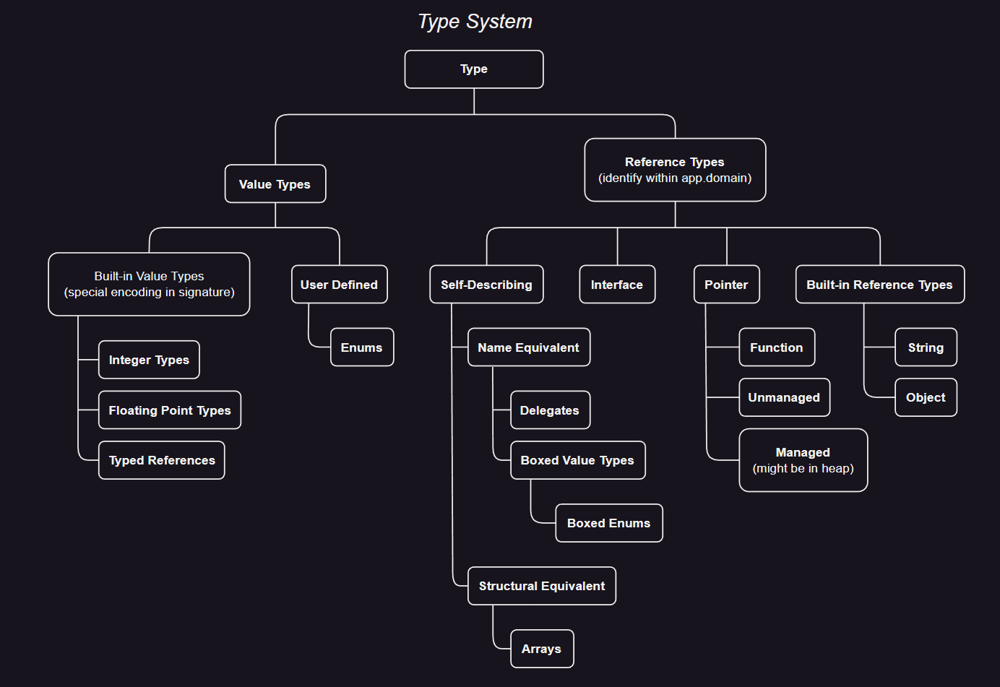

[TOC]
公共语言基础结构 CLI 为可执行代码及其运行的执行环境（虚拟执行系统，VES）提供了规范。可执行代码以模块的形式呈现给 VES。CLI 的核心是一个统一的类型系统，由编译器、工具和 CLI 本身共享的公共类型系统。该模型定义了 CLI 在声明、使用和管理类型时遵从的规则。CTS 建立了一个支持跨语言集成、类型安全和高性能代码执行的框架。
CLI 主要包含四个方面：
CLI 的这些方面共同构成了一个统一的基础结构，用于设计、开发、部署和执行分布式组件和应用程序。针对 CLI 的每种编程语言都有 CTS 的适当子集。基于语言的工具彼此通信，并使用元数据与 VES 通信，以定义和引用用于构造应用程序的类型。VES 使用元数据根据需求创建类型的实例，并向 CLI 的其他部分（如远程服务、程序集下载和安全性）提供数据类型信息。
类型安全通常是根据它所做的事情（如，保证不同对象之间的封装）或根据它所防止的事情（例如，在不应该写的地方写内存损坏）来讨论的。从 CTS 的角度来看，类型安全保证：
CTS 提高了类型安全性，可以选择性地强制类型安全，难点在于如何确定实现是否符合类型安全声明。由于声明携带元数据并与程序编译在一起，因此从公共中间语言 CIL 到本机代码的编译器可以对实现进行类型检查。
元数据通过描述代码定义的类型及其外部引用的类型来描述代码。编译器在生成代码时生成元数据。元数据中存储了足够的信息，以便：
CTS 假设执行环境是元数据驱动的。使用元数据允许 CLI 以支持：
托管代码是提供足够信息的代码，以允许 CLI 提供一组核心服务：
CLI 指定了一组特定的指令集，CIL 和文件格式，用于存储和传输托管代码。
托管数据是由 CLI 通过垃圾回收的进程自动分配和释放的数据。
CLS 是一组促进语言间互操作性的规范，CLS 遵从性是指在 CLI 实现上执行并生成的类型的特性，这些类型必须符合 CLI 标准。这些附加规则仅适用于在程序集中可见的类型，以及可在程序集中外部访问的成员。
CLS 是一组应用于生成程序集的规则，它被设计为支持库和设计用于编写库的高级编程语言间的互操作性。从生成程序集过程中使用的高级语言源代码和工具（如编译器）的角度来考虑 CLS 规则是有用的。
由符合 CLS 的代码组成的库被称为框架（framework）。框架是为广泛的编程语言和工具（包括 CLS Consumer 和扩展语言）使用而设计的。通过遵守 CLS 规则，库的作者可以确保库可以被更大的工具类使用。
符合 CLS 的框架应遵循的一般原则：
CLS Consumer 是一种语言或工具，其设计目的是允许访问符合 CLS 的框架提供的所有特性，但不一定能够实现它们。
CLS Consumer 工具预计的部分功能支持：
CLS Consumer 工具无需支持：
CLS extender 是一种语言或工具，旨在允许程序员使用和扩展符合 CLS 的框架。CLS extender 支持 CLS Consumer 所支持的行为的超集（即，适用于 CLS Consumer 的所有内容也适用于 CLS extender）。除了满足用户的要求外，CLS extender 还应支持：
CLS extender 无需支持：
CLS Rule 48：如果一个类型中声明的两个或多个符合 CLS 的方法具有相同的名称，并且对于一组特性的类型实例化，它们具有相同的参数和返回类型，那么所有这些方法在这些类型实例化中应该在语义上等效。
CLS 定义了语言互操作规则（从 framework，consumer，extender 三个角度描述），这些规则仅适用于 “外部可见” 的元素。该语言互操作性的 CLS 单元是程序集，在这个单个程序集内，可以使用的元素没有限制。
For consumer：没有影响。 For extender：在编译时进行 CLS 遵从性检查时，请确保仅将规则应用于将导出到程序集外部的信息。 For framework：CLS 规则不适用于程序集的内部实现。一个公开可访问的内容（在另一个程序集的可执行代码：类型、接口、方法、字段、属性、事件等）要么是只具有符合 CLS 的类型组成的签名，要么被特别标记为不符合 CLS，要么该类型符合 CLS。
CLS 指定如何标记程序集的外部可见部分，以指示它们是否符合 CLS 要求。System.CLSCompliantAttribute 指示哪些类型和类型成员是 CLS 兼容的，它可以附加到程序集，以指定程序集包含的所有顶级类型的默认遵从级别。CLSCompliantAttribute 包含一个 Boolean 参数，用于指示与其关联的项是否符合 CLS，这允许显式地将任何项标记为是否符合 CLS。
确定 CLS 遵从性的一般规则：
[CLSCompliantAttribute] 时，假定它是 [CLSCompliantAttribute(false)]。[CLSCompliantAttribute(false)] 标记为不兼容 CLS。For consumer：可以使用上述规则忽略任何不符合 CLS 的成员。 For extender：应该鼓励正确标记新编写的程序集和公开导出的类型和成员。强烈建议在编译时强制执行 CLS 规则。 For framework：应正确标记所有公开导出的成员的 CLS 遵从性。这里指定的规则可用于最小化所需标记的数量（例如，如果所有类型和成员都符合要求，或者只有少数例外需要标记，则对整个程序集进行标记）。
类型描述值并指定该类型的所有值都应支持的协议。因为 CTS 支持面向对象编程 OOP 以及函数式和过程式编程语言，所以它处理两种实体：对象（Objects）和值（Values）。
对于整数和浮点数，值是简单的位模式；每个值都有一个类型，该类型既描述了它所占用的存储空间和它的表示形式中 Bits 的含义，还描述了在该表示形式上可以执行的操作。值用于表示类似 C 等编程语言中对应的简单类型，也用于表示 C++、Java 等语言中的非对象。
对象具有比值更多的东西。每个对象都是自类型化的，它的类型显式地存储在它的表示中。它有一个区别于所有其他对象的标识，并且它有存储其他实体（可以是对象或值）的槽。虽然可以更改其槽的内容，但对象的标识永远不会更改。
有几种对象和值，如下面的图表所示：

泛型特性允许使用一个模式定义一整套类型和方法，其中包括称为泛型参数的占位符。根据需要，这些泛型参数被特定类型替换，以实例化实际需要的实例类型成员。泛型的设计要满足：
Object 来模拟泛型差；好的实现可以做得更好，避免对引用类型实例化进行强制转换，并为值类型实例化生成专门的代码。此外，CLI 还支持协变和逆变泛型类型参数，具有以下特点：
在 Value-Oriented 编程中，术语类型通常用于表示数据表示。在面向对象编程中，它通常指的是行为而不是表示。在 CTS 中，类型用于表示：两个程序实体只有在当且仅当它们具有兼容的表示行为时被视为是存在兼容性的类型。因此，在 CTS 中，如果一种类型是从基类型派生的，那么派生类型的实例可以替换为基类型的实例，因为表示和行为都是兼容的。
与某些 OOP 语言不同，在 CTS 中，具有根本不同表示的两个对象具有不同的类型。一些 OOP 语言使用不同的类型概念。如果两个对象以相同的方式响应同一组消息，则认为它们具有相同的类型。这个概念在 CTS 中通过说对象实现相同的接口来捕获。
类似地，一些 OOP 语言认为消息传递是计算的基本模型。例如消息传递在 CTS 中对应于调用虚方法，其中虚方法的签名扮演消息的角色。
CTS 本身并不直接捕捉 “无类型编程” 的概念。也就是说，如果不知道对象的类型，就无法调用非静态方法。然而，无类型编程（如果它被实现的话）可以基于反射包提供的工具来实现。
在计算机编程中，类型 用于描述可以存储在变量中、作为参数传递或由函数返回的值。每个值都是类型的一个实例，每个值的使用都需要一个类型。类型定义了类型值支持的允许值和允许操作。所有运算符和函数都有访问或使用的每个值的预期类型。
每个值都有一个完全描述其类型属性的确切类型。每个值都是其确切类型的实例，也可以是其他类型的实例。特别地，如果一个值是继承自另一个类型的类型的实例，则它也是该另一个类型的实例。
CTS 有两种类型，值类型和引用类型：
一个托管指针，或者称为 byref，可以指向一个局部变量、参数、复合类型的字段或数组的元素。然而，当一个调用跨越远程边界时，符合规范的实现可以使用 copy-in / copy-out 机制，而不是托管指针。因此，程序不应依赖真正指针的别名行为。托管指针类型只允许用于局部变量和参数签名；它们不能用于字段，或作为数组的元素类型，并且禁止对托管指针类型的值进行装箱。对于方法的返回类型使用托管指针类型是不可验证的。
出于性能原因，GC 堆上的项目可能不包含对其他 GC 对象内部的引用，这促使对字段和装箱施加限制。返回一个引用本地或参数变量的托管指针可能会导致引用比变量存在的时间更长，因此它是不可验证的。
基础类库中有三种值类型：System.TypedReference、System.RuntimeArgumentHandle 和 System.ArgIterator。
值类型 System.TypedReference，或者称为 typed reference 或 typedref，包含一个指向位置的托管指针和一个可以存储在该位置的类型的运行时表示。typed references 具有与 byrefs 相同的限制。typed references 是由 CIL 指令 mkrefany 创建的。
值类型 System.RuntimeArgumentHandle 和 System.ArgIterator，包含指向 VES 堆栈的指针。它们可以用于局部变量和参数签名。这些类型用于字段、方法返回类型、数组的元素类型或装箱是不可验证的。这两种类型被称为 byref-like 类型。
以下数据类型是 CTS 的组成部分，并直接由 VES 支持。它们在持久化的元数据中有特殊的编码。
| Name in CIL assembler | CLS Type? | Name in class library | Description |
|---|---|---|---|
bool |
Yes | System.Boolean |
True/False value |
char |
Yes | System.Char |
Unicode 16-bit char. |
object |
Yes | System.Object |
Object or boxed value type |
string |
Yes | System.String |
Unicode string |
float32 |
Yes | System.Single |
IEC 60559:1989 32-bit float |
float64 |
Yes | System.Double |
IEC 60559:1989 64-bit float |
int8 |
No | System.SByte |
Signed 8-bit integer |
int16 |
Yes | System.Int16 |
Signed 16-bit integer |
int32 |
Yes | System.Int32 |
Signed 32-bit integer |
int64 |
Yes | System.Int64 |
Signed 64-bit integer |
native int |
Yes System.IntPtr |
Signed integer, native size | |
native unsigned int |
No | System.UIntPtr |
Unsigned integer, native size |
typedref |
No | System.TypedReference |
Pointer plus exact type |
unsigned int8 |
Yes | System.Byte |
Unsigned 8-bit integer |
unsigned int16 |
No | System.UInt16 |
Unsigned 16-bit integer |
unsigned int32 |
No | System.UInt32 |
Unsigned 32-bit integer |
unsigned int64 |
No | System.UInt64 |
Unsigned 64-bit integer |
如果一个类型能够明确无误地定义值的表示和在该值上定义的操作，那么它就完全描述了一个值。
有些类型只是部分描述，例如接口类型。这些类型描述了没有实现定义的操作子集，因此，不能是任何值的精确类型。因此，虽然一个值只有一个精确类型，但它也可以是许多其他类型的值。由于精确类型完全描述了值，它也完全指定了精确类型的值可以具有的所有其他类型。
虽然每个值都有一个精确类型，但并不总是可以通过检查值的表示来确定精确类型。特别是，永远无法确定值类型的值的精确类型。例如两种内置的值类型，32 位有符号和无符号整数。虽然每种类型都是它们各自值的完全规范（即，精确类型），但无法从值的特定 32 位序列中推导出是哪个精确类型。
对于一些称为对象的值，总是可以从值中确定精确类型。对象的精确类型也被称为对象类型。对象是引用类型的值，但并非所有引用类型都描述对象。例如一个值，它是一个指向 32 位整数的指针，一种引用类型。通过检查指针位无法发现值的类型；因此它不是一个对象。内置的 CTS 引用类型 System.String，这种类型的值的精确类型总是可以通过检查值来确定的，因此 System.String 类型的值是对象，而 System.String 是一个对象类型。
对于每种值类型，CTS 都定义了一个相应的引用类型，称为装箱类型，反之则不然。一般来说，引用类型没有相应的值类型。装箱类型的值（装箱值）的表示形式是可以存储值类型的值的位置。装箱类型是对象类型，装箱值是对象。
一个装箱类型不能直接通过名称引用，因此没有这样一个装箱类型的字段或局部变量。装箱枚举值类型最接近的命名基类是 System.Enum；对于所有其他值类型，它是 System.ValueType。类型为 System.ValueType 的字段只能包含 null 值或一个装箱值类型的实例。类型为 System.Enum 的局部变量只能包含 null 值或一个装箱枚举类型的实例。
所有值类型都有一个名为 box 的操作。对任何值类型进行装箱都会产生其装箱值；即，包含原始值的位序列复制的相应装箱类型的值。如果值类型是可空类型 —— 定义为值类型 System.Nullable<T> 的实例化 —— 结果是 null 引用或其 Value 属性的位序列复制，取决于其 HasValue 属性（false 或 true）。所有装箱类型都有一个名为 unbox 的操作，该操作会产生一个指向值的位表示的托管指针。
box 指令可以应用于不仅仅是值类型的类型；这些类型被称为可装箱类型。如果一个类型满足以下条件之一，那么它就是可装箱的：
constrained. 前缀可以通过避免装箱值类型来提高性能。System.Void 类型永远不会被装箱。接口和继承只在引用类型上定义。因此，虽然值类型定义可以指定由值类型实现的接口和它继承的类（System.ValueType 或 System.Enum），但这些只适用于装箱值。
CLS Rule 3：装箱的值类型不是 CLS-compliant 的。适当的情况下，可以使用
System.Object，System.ValueType或System.Enum来代替装箱类型。For consumer：不需要导入装箱值类型。 For extender：不需要提供定义或使用装箱值类型的语法。 For framework：不能在其公开导出的部分中使用装箱值类型。
所有的值都定义了两个二元操作：identity 等价性和 equality 相等性。它们返回一个 Boolean 值，表示数学等价运算：
a op a = true。b op a = true 时 a op b = true。a op b = true 且 b op c = true 时，a op c = true。虽然 identity 总是意味着 equality，反之则不然。例如考虑三个变量 A,B -> "here's some text" 和 C -> "here's some text"，它们的类型是 System.String，其中箭头意味着 “是对 "here's some text" 的引用”。
如果字符序列的位置相同（即，实际上在内存中只有一个字符串），那么变量的值是相同的。如果字符序列相同，那么存储在变量中的值是相等的。因此，变量 A 和 B 的值是 identity（指向同一对象），变量 A 和 C 以及 B 和 C 的值不是 identity（指向不同对象），但变量 A、B 和 C 的值内容是相等（equality）的。
Identity 等价性运算的 CTS 定义：
System.Object 类提供了一个名为 ReferenceEquals 的方法，用于确定两个对象引用是否指向内存中的同一位置。
对于值类型，等式运算符是确切类型定义的一部分。等式的定义应遵循以下规则：
Equality 是通过 System.Object.Equals 方法实现的。
虽然 IEC-60559:1989 定义了两个浮点 NaN 总是比较为不等，但 System.Object.Equals 要求必须重写满足等价运算符的要求。因此当比较两个 NaN 时，System.Double.Equals 和 System.Single.Equals 返回 True，而等式运算符在这种情况下返回 False。
值是存储在位置（Location）中的。一个位置一次只能存储一个值，所有的位置都是有类型的。位置的类型体现了存储在该位置的值必须满足的要求。Locations 例子包括局部变量和参数。
位置的类型指定了对从该位置加载的任何值的使用限制。例如，一个位置可以存储潜在的许多精确类型的值，只要所有的类型都可以赋值给该位置的类型。从位置加载的所有值都被视为该位置的类型。即使存储在位置中的值的精确类型能够进行额外的操作，也只能调用对位置的类型有效的操作。
一个值只有在其类型之一与位置的类型兼容时，才能存储在该位置。一个类型总是可以赋值给自身。赋值兼容性通常可以在编译时确定，这样就无需在运行时进行测试。
有时希望将一个类型的值（该类型不能赋值给某个位置）转换为可以赋值给该位置类型的值。这是通过对值进行强制转换来实现的。强制转换接受一个特定类型的值和一个期望的类型，并试图创建一个具有与原始值等价含义的期望类型的值。强制转换可能导致表示形式的改变以及类型的改变；因此，强制转换不一定保留对象的原有类型身份信息。
强制转换有两种：扩大和缩小。扩大永远不会丢失信息，而缩小可能会丢失信息。一个扩大强制转换的例子是将一个 32 位有符号整数的值强制转换为一个 64 位有符号整数的值。一个缩小强制转换的例子是将一个 64 位有符号整数强制转换为一个 32 位有符号整数。
编程语言通常将扩大强制转换实现为隐式转换，而缩小强制转换通常需要显式转换。
一些强制转换是直接内置在对内置类型的 VES 操作中的。所有其他的强制转换都应明确请求。对于内置类型，CTS 提供了操作来执行无运行时检查的扩大强制转换和有运行时检查或截断的缩小强制转换，这取决于操作的语义。
由于一个值可以有多种类型，所以在使用该值时需要明确识别出正在使用的是哪种类型。由于从已经定义类型的位置读取值，所以使用的值的类型就是从其中读取值的位置的类型。如果要使用不同的类型，那么值会被转换（Cast）为其他类型。
转换通常是一个编译时操作，但是如果编译器不能静态地知道值是否为目标类型，那么就会进行运行时的转换检查。与强制转换（Coercion）不同，转换并不会改变对象的实际类型，也不会改变它的表示。转换保留了对象的 Identity。
例如，当从一个定义为持有特定接口值的位置对读取的值进行转换时，可能需要进行运行时检查。因为接口是对值的不完全描述，所以将该值转换为不同的接口类型通常会导致运行时的转换检查。
类型定义了该类型的值可以具有的值和支持的操作。如果该类型的可允许的值有子结构，那么该子结构是通过该类型的字段或数组元素来描述的。如果有属于该类型的操作，那么这些操作是通过该类型的方法来描述的。字段、数组元素和方法被称为该类型的成员。属性和事件也是类型的成员。
一个值的表示（除了内置类型）可以被细分为子值。这些子值要么被命名，此时它们被称为字段，要么通过索引表达式访问，此时它们被称为数组元素。描述由数组元素组成的值的类型是数组类型。描述由字段组成的值的类型是复合类型。一个值不能同时包含字段和数组元素，尽管复合类型的一个字段可以是数组类型，而一个数组元素可以是复合类型。
数组元素和字段都是有类型的，这些类型永远不会改变。数组中的所有元素都应该具有相同的类型。复合类型的每个字段可以有不同的类型。
一个类型可以将操作与该类型或该类型的每个实例关联起来，这样的操作被称为方法。一个方法有一个名称，并且有一个签名，该签名指定了其所有参数和返回值（如果有）的允许类型。
一个只与类型本身（而不是类型的特定实例）关联的方法被称为静态方法。
与类型的实例关联的方法要么是实例方法，要么是虚方法。当它们被调用时，实例方法和虚方法都会传递一个实例，这个实例就是此次调用要操作的对象（被称为 this 或者 this pointer）。
实例方法和虚方法的基本区别在于如何定位实现。通过指定一个类和该类中的实例方法来调用实例方法。除了泛型类型的实例方法的情况外，作为 this 传递的对象可以是 null 或者是任何从定义该方法的类继承的类型的实例。虚方法也可以以这种方式被调用。例如，当一个虚方法的实现希望调用其基类提供的实现时，就会发生这种情况。CTS 允许在虚方法的主体内部将 this 设为 null。
允许使用非虚拟调用来调用虚拟方法，这消除了对 “call super” 指令的需要，并允许在虚拟方法和非虚拟方法之间进行版本更改。如果不希望空的 this pointer 传递到被调用的方法，那么就需要 CIL 生成器插入对空指针的显式测试。
一个虚拟方法或实例方法也可以通过另一种机制来调用，即虚拟调用。任何从定义了虚拟方法的类型继承的类型都可以提供该方法的自己的实现，根据对象的运行时类型来决定调用哪个实现。
类型可以声明与类型本身而不是类型的任何特定值相关联的字段，这样的字段是类型的静态字段。静态字段声明了一个由类型的所有值共享的位置。就像非静态（实例）字段一样，静态字段是有类型的，这个类型永远不会改变。静态字段总是限制在单个应用程序域的基础上，但它们也可以按线程分配。
同样，类型也可以声明与类型本身而不是类型的值关联的方法。这样的方法是类型的静态方法。由于静态方法的调用没有与之关联的值，因此在静态方法中没有可用的 this pointer。
一个对象类型可以将其任何方法声明为虚方法。与其他方法不同，实现该类型的每个确切类型都可以提供虚方法的自己的实现。虚方法可以通过普通的方法调用机制来调用，该机制使用静态类型、方法名和参数类型来选择实现，在这种情况下，this pointer 可以为 null。
另外，虚方法还可以通过一种特殊的机制（虚调用）来调用，该机制根据用于进行虚调用的实例的动态检测类型，而不是在编译时静态已知的类型来选择实现。虚方法可以被标记为 final。
类型系统的实体被赋予名称，以便可以被类型系统的其他部分或类型的实现引用。类型、字段、方法、属性和事件都有名称。在类型系统中，值、局部变量和参数没有名称。类型系统的实体被赋予一个单一的名称。
所有的名称比较都是按字节进行的（区分大小写，独立于地区设置）。在使用名称来访问内置的 VES 提供的功能（例如，类初始化方法）时，定义中总是有相应的指示，以避免构建任何一组保留的名称。
CLS Rule 4：程序集应遵循附录 Annex 7 of Technical Report 15 of the Unicode Standard 3.0，该 附录 规定了允许开始和包含在标识符中的字符集。标识符应采用 Unicode Normalization Form C 定义的规范格式。出于对 CLS 的支持，如果两个标识符的小写映射（由 Unicode 不区分区域的一对一小写映射指定）相同，那么这两个标识符就是相同的。要想在 CLS 下被认为是不同的，两个标识符在大小写上必须有所不同。但是，为了覆盖隐藏继承的定义，CLI 要求使用原始声明的精确编码。
For consumer：不需要使用违反该规则的类型，但应有一种机制允许访问使用其自身关键字作为名称的命名项。 For extender：不需要创建违反该规则的类型。应提供一种机制允许定义遵循这些规则的新名称，但这些新名称与语言中的关键字相同。 For framework：不应导出违反该规则的类型。应避免使用常用编程语言中的关键字作为名称。
通常，名称并不是唯一的。名称被收集到称为范围（作用域，scopes）的分组中。在一个作用域内，只要它们是不同类别（kinds，方法、字段、嵌套类型、属性和事件）或具有不同的签名，一个名称就可以引用多个实体。
CLS Rule 5：在遵循 CLS 的范围内引入的所有名称应该是独立的，且不依赖于类型，除非这些名称相同并通过重载进行解析。尽管 CTS 允许单个类型为方法和字段使用相同的名称，但 CLS 不允许这样做。
CLS Rule 6：字段和嵌套类型应仅通过标识符比较来区分，尽管 CTS 允许区分不同的签名。具有相同名称（通过标识符比较）的方法、属性和事件应该不仅仅在返回类型上有所不同，除 CLS Rule 39 情况外。
For consumer：不需要使用违反这些规则的类型，只需忽略任何被标记为不符合 CLS-Compliant 的成员即可。 For extender：不需要提供定义违反这些规则的类型的语法。 For framework：如果类型违反了这些规则，那么就不应该将其标记为 CLS-Compliant，除非他们将类型中足够多的违规项标记为不遵循 CLS-Compliant，以使得剩余的成员之间不会发生冲突。
一个命名实体在一个范围中有其名称。因此要识别一个命名实体，需要提供一个范围和一个名称。范围被认为是对名称的限定（qualify），类型为类型中的名称提供了一个范围，因此，类型限定了类型中的名称。
由于类型是命名的，因此类型的名称也被分组到范围中。为了完全识别一个类型，类型名称应由包含类型名称的范围进行限定。类型名称的范围由包含类型实现的程序集（assembly）进行限定。程序集是一组可配置的、可加载的代码模块和其他资源的集合，这些模块和资源共同实现了一个功能单元。类型名称被认为在实现该类型的程序集的程序集范围（assembly scope）内。程序集本身有名称，这些名称构成了 CTS 命名层次结构的基础。
Type definition 类型定义：
CTS 支持枚举（enum），也称为枚举类型（enumeration type）。为了匹配签名，枚举不应该与底层类型相同。但是，枚举的实例应该可以赋值给底层类型，反之亦然。从枚举转换到底层类型，或者从底层类型转换到枚举，都不需要转换（cast）或强制转换（coercion）。枚举类型受到更多的限制：
System.Enum 派生。枚举的底层类型应该是内置的整数类型。枚举应该从 System.Enum 派生，因此它们是值类型。像所有的值类型一样，它们应是密封的。
CLS Rule 7：枚举的底层类型应该是内置的 CLS 整数类型，字段的名称应该是
"value__"，并且该字段应该被标记为RTSpecialName。CLS Rule 8：有两种不同的枚举，通过
System.FlagsAttribute自定义特性的存在或缺失来表示。一种代表命名的整数值；另一种代表可以组合生成未命名值的命名位标志。枚举的值不限于指定的值。For consumer：应接受遵循这些规则的枚举的定义，但不需要区分标志（
Flags）和命名值。 For extender：与 consumer 相同。支持扩展的语言允许编写枚举，但不需要区分标志（Flags）和命名值。 For framework：不应该暴露违反这些规则的枚举，也不应该假设枚举只有指定的值。
要引用作用域中的一个命名实体，作用域和作用域中的名称都必须是可见的（visible）。可见性由包含引用的实体（引用者，referent）和包含被引用名称的实体（引用实体，referenced entity）之间的关系决定。参考以下伪代码：
class A{
int IntInsideA;
}
class B : A{
void method() => IntInsideA = 15;
}
// 分析在 A 中对字段 IntInsideA 的引用：
// - B 是引用者，它有一个方法引用了该字段
// - A 中的 IntInsideA 是被引用实体
为了确认引用是否被允许访问被引用实体，需要确认被引用实体的名称是否对引用可见；如果可见，引用是否可访问。只有满足以下条件，才允许访问类型的成员：
一个实例化的泛型类型只有在其自身和每个组成部分（泛型类型定义和泛型参数）都可见的情况下，才能从某个程序集中可见。例如，如果 List<T> 从程序集 A 中导出，且 MyClass 在程序集 B 中定义但未导出，那么 List<MyClass> 只能在程序集 B 内部可见。
只有类型名称而非成员名称具有可控制的可见性。类型名称分为：
一个顶级命名类型只有在具有公共可见性时才会被导出。由类型定义器生成的类型只有在类型被构造时才会被导出。由类型定义器生成的类型，如果其生成的所有类型都可见，那么该类型就是可见的。
一个类型包含了它的所有成员，并且还指定了其成员的可访问性规则。除非特别指出，否则可访问性仅基于被引用成员的静态可见类型以及正在进行引用的类型和程序集来决定。CTS 支持七种不同的可访问性规则：
一个成员或嵌套类型只有在具有 public，family-or-assembly，或 family 可访问性时，并且其定义类型（在成员的情况下）或其封闭类型（在嵌套类型的情况下）被导出的情况下，才会被导出。
类型定义器的可访问性与生成它的类型的可访问性相同。一般来说，类型的成员可以被分配任何一种可访问性规则。然而，有三个例外：
包括 C++ 在内的语言允许这种 “扩大” 的访问权限。限制访问会提供一种错误的安全幻觉，因为简单地将一个对象转换为基类（这在方法调用时隐式发生）就可以调用该方法，尽管访问权限受到限制。为了防止虚拟方法被重写，使用 final 而不是依赖于有限的可访问性。
CLS Rule 10：在重写继承的方法时，可访问性不应改变，除非重写从不同程序集继承的具有 family-or-assembly 可访问性的方法。在这种情况下，重写应具有 family 可访问性。
For consumer：不需要接受扩大访问继承虚方法的类型。 For extender：不需要提供语法来支持对继承虚拟方法的扩大访问。 For framework：不应依赖于扩大对虚拟方法的访问的能力，无论是在框架导出部分还是在框架内部的用户。
对成员的访问也受到可以附加到程序集、类型、方法、属性或事件的安全需求的控制。安全需求不是类型协议的一部分，因此不会被继承。有两种类型的需求：
每种需求只能附加到任何一项上。将安全需求附加到程序集意味着它被附加到程序集中的所有类型上，除非另一种相同类型的需求被附加到类型上。同样，附加到类型上的需求意味着对类型的所有成员都有相同的需求，除非另一种相同类型的需求被附加到成员上。
一个类型可以是封闭类型的成员，在这种情况下，它是一个嵌套类型。嵌套类型具有与封闭类型相同的可见性，并具有封闭类型的任何其他成员的可访问性。这种可访问性决定了哪些其他类型可以引用嵌套类型。也就是说，对于一个类来说，定义一个嵌套类型的字段或数组元素，有一个方法将嵌套类型作为参数或返回一个值等，嵌套类型应该对引用类型既可见又可访问。
嵌套类型是封闭类型的一部分，因此其方法可以访问封闭类型的所有成员，以及从其继承的类型的成员的 family 访问。嵌套类型的名称由其封闭类型限定，而不是其程序集（只有顶级类型由其程序集限定）。程序集内的嵌套类型的名称没有唯一性要求。
Contracts 协议是被命名的。它们是所有实现方和所有协议方之间对一组签名的共享假设。签名是协议的一部分，可以被检查和执行。
协议不是类型，它们指定了对类型实现的要求。类型声明了它们遵守的协定（即，所有类型的实现应支持的协议）。可以验证一个类型的实现，以检查协议的可执行部分 “命名签名” 是否已经被实现。协议的种类有：
签名是协议的一部分，可以被检查和自动执行。签名是通过向类型和其他签名添加约束来形成的。约束是对值或位置的使用或允许操作的限制。例如，约束可能是一个位置是否可以被覆盖为不同的值，或者一个值是否可以被改变。
所有位置都有签名，所有值也是如此。赋值兼容性要求值的签名（包括约束）与位置的签名（包括约束）兼容。有四种基本类型的签名：类型签名，位置签名，参数签名和方法签名。局部签名实际上是位置签名的一个版本。
CLS Rule 11：出现在签名中的所有类型都应该是 CLS-compliant 的。组成实例化泛型类型的所有类型都应该是 CLS-compliant 的。
CLS Rule 12：类型和成员的可见性和可访问性应是：任何成员签名中的类型在成员本身可见和可访问时应该是可见和可访问的。例如，一个在其程序集外部可见的公共方法不应该有一个只在程序集内部可见的类型的参数。在任何成员的签名中使用的实例化泛型类型的组成类型的可见性和可访问性应该在成员本身可见和可访问时是可见和可访问的。一个在其程序集外部可见的成员的签名中存在的实例化泛型类型不应该有一个只在程序集内部可见的类型的泛型参数。
For consumer：不需要接受那些包含违反规则成员的类型。 For extender：不需要提供语法来违反这些规则。 For framework：在其导出类型及其成员中不得违反此规则。
类型签名定义了对值及其使用的约束。一个类型本身就是一个有效的类型签名。不能通过检查值或者定义值的类类型来确定值的类型签名。值的类型签名是从加载值的位置的位置签名或计算它的操作中派生出来的。通常，值的类型签名是从其中加载值的位置签名中的类型。
之所以要区分类型签名和位置签名，是因为某些约束，如 “常量”，是对值而不是位置的约束。未来的标准版本或非标准扩展可以引入类型约束，从而使这种区别有意义。
所有的位置都是有类型的。这意味着所有的位置都有一个位置签名，它定义了对位置、其使用以及存储在位置中的值的使用的约束。任何有效的类型签名都是一个有效的位置签名。因此，位置签名包含一个类型，并可以额外包含常量约束。位置签名还可以包含位置约束（location constraint），这些约束对位置的使用进行了进一步的限制。位置约束包括：
CLS Rule 13：字面量静态的值是通过使用字段初始化元数据来指定的。一个符合 CLS 的字面量必须在字段初始化元数据中指定一个与字面量完全相同类型的值（或者，如果该字面量是枚举，则为底层类型）。
For consumer：必须能够读取静态字面量字段的字段初始化元数据，并在引用时内联指定的值。consumer 可以假设字段初始化元数据的类型与字面量字段的类型完全相同（即，Consumer Tools 不需要实现值的转换）。 For extender：必须避免为静态字面量字段生成字段初始化元数据，其中字段初始化元数据的类型与字段的类型不完全匹配。 For framework：应避免使用指定需要转换值的字面量的值的语法。编译器可以在持久化字段初始化元数据之前自行进行转换，从而产生符合 CLS 的框架，但鼓励框架不要依赖这种隐式转换。
在一个位置上提供一个易变（volatile）的约束，要求存储在该位置的值在访问之间不被缓存，这似乎是合理的。然而，CIL 在某些指令前加上了一个 volatile. 前缀，以指定该值既不被缓存，也不使用现有的缓存来计算。这样的约束可以使用自定义特性来编码，尽管这个标准没有指定这样的特性。
局部签名（local signature）指定了在方法运行期间分配的局部变量的约束。局部签名包含完整的位置签名，另外还可以指定一个额外的约束：byref 约束声明相应位置的内容是一个托管指针。托管指针可以指向局部变量、参数、复合类型的字段或数组的元素。然而，当一个调用跨越远程边界时，符合规范的实现可以使用 copy-in / copy-out 机制，而不是托管指针。因此，程序不应依赖真正指针的别名行为。
另外，还有一个特殊的局部签名。类型引用局部变量的签名包含指向某个位置的托管指针和可以存储在该位置的类型的运行时表示。类型引用签名类似于 byref 约束，但是 byref 在 byref 约束的一部分（作为类型描述的一部分）中指定了类型，而类型引用动态地提供了类型信息。类型引用本身就是一个完整的签名，不能与其他约束组合。特别地，不可能指定类型为类型引用（typed reference）的 byref。
类型引用签名实际上被表示为一个内置的值类型，就像整数和浮点类型一样。在基类库中，这种类型被称为 System.TypedReference，在 CIL 汇编语言中，它被关键字 typedref 指定。这种类型只能用于参数和局部变量。它不应被装箱，也不应被用作字段、数组的元素或返回值的类型。
For consumer：无需接受此类型。 For extender：无需提供定义此类型的语法，或扩展使用此类型的接口或类。 For framework：此类型不应出现在导出的成员中。
参数签名（parameter signature）定义了作为方法调用一部分传递单个值的约束。参数签名由方法定义声明。任何有效的局部签名都是有效的参数签名。
方法签名（method signature）由以下部分组成：
T，那么 this 指针的类型是：
instance explicit）的，则由第一个参数签名给出；T 是值类型并且方法定义是非虚拟的，则推断为 &T；T 是值类型并且方法定义是虚拟的（这包括由 T 实现的接口的方法定义），则推断为 “装箱” T，T。方法签名是由方法定义声明的。除参数签名的约束外，只能添加一个约束到方法签名：
vararg 约束，以表明从这个位置开始的所有参数都是可选的。当它出现时，调用约定应该是支持可变参数列表的。方法签名有两种不同的用途：作为方法定义的一部分，或作为通过函数指针调用时的调用点的描述。在后一种情况下，方法签名指示：
vararg 标记，指示固定参数列表结束和可变参数列表开始的位置。当用作方法定义的一部分时，vararg 约束由调用约定选择表示。
单个方法实现可以同时满足类型的方法定义和类型实现的接口的方法定义。如果类型是值类型 T，那么在类型自己的方法定义的方法签名中，this 指针是一个托管指针 &T，而在与接口的方法定义相关联的方法签名中，它是 “装箱” 了的 T。
this 指针的存在影响了 CIL 中参数签名和参数编号的配对。如果为 this 指针推断出参数签名，那么元数据中的第一个参数签名就是参数编号一。如果没有 this 指针，如静态方法，或者这是一个 instance explicit 方法，那么第一个参数签名就是参数编号零。
For consumer：无需接受具有可变参数列表或非托管调用约定的方法。 For extender：无需提供声明
vararg约束方法或非托管调用约定方法的语法。 For framework：既不应导出具有vararg约束的方法，也不应导出具有非托管调用约定的方法。
对于方法签名以外的签名，只有当签名的每个组件类型在两个签名中都相同，才认为两个签名匹配。方法签名匹配用于确定隐藏和重写。只有在以下情况下，才认为两个方法签名匹配：
this 指针的类型可以分配给被重写或隐藏签名的 this 指针的类型；Void。在重写或隐藏时，该元素的可访问性不需要相同。
赋值兼容性（assignment compatibility）是指将类型 T（由类型签名静态描述）的值存储到类型 U（由位置签名描述）的位置的能力，简写为 U := T。因为 T 的类型签名是静态描述的，所以值可能实际上并不是由签名描述的类型，而是与该类型兼容的某种内容。例如没有位置或没有值具有 System.Void 类型。
根据评估的上下文，确定类型兼容性的规则有所不同。赋值兼容性定义了以下关系：
castclass 和 isinst 使用的关系，也用于确定变体泛型参数的有效性。基于此关系的操作不会改变值的表示。在转换时，源类型是值的动态类型。这些关系是根据六个类型子集定义的：
S 和 T 具有相同的简化类型时，值类型 S 的值可以存储到值类型 T 的数组中，或从值类型 T 的数组中加载；并且值类型 S 的数组可以赋值给值类型 T 的数组。简化类型是 underlying types 底层类型的子集。F（F 不是上述四个子集的成员）。null 类型。以下是对 underlying types 底层类型、reduced types 简化类型、verification types 验证类型和 intermediate types 中间类型的精确定义。
对浮点类型的处理
浮点值有两种类型：名义类型（the nominal type）和表示类型（the representation type）。有三种浮点类型：
float32、float64和F。一个（名义）类型为float32或float64的值可能由一个实现使用类型F的值来表示。除非明确指出，任何对浮点类型的引用都指的是名义类型，特别是在引用签名和赋值兼容性时。因此，当赋值兼容性规则指出基于（名义）类型的浮点表示可能会改变时，表示类型可能已经相同，实际上并未进行任何改变。符号预定义
- S, T, U, V, W 表示任意类型表达式；
- N, M 表示声明的类型名称；
- X, Y 表示声明的（正式）类型参数。 T 的某种定义形式 N<{Xi ← Ti}> 表示为 T 是一个可能实例化的对象、接口、委托或形式为 N<T1,…,Tn>, n ≥ 0 (n = 0, <> 为空) 的值类型，其中 N 用泛型参数 X1,…,Xn 表示。
类型 T 的 基础类型 如下：
类型 T 的 简化类型 如下：
int8 或 unsigned int8，那么它的简化类型是 int8。int16 或 unsigned int16，那么它的简化类型是 int16。int32 或 unsigned int32，那么它的简化类型是 int32。int64 或 unsigned int64，那么它的简化类型是 int64。native int 或 unsigned native int，那么它的简化类型是 native int。简化类型忽略了枚举和有符号与无符号整数类型之间的语义差异；如果它们具有相同的位数，则将这些类型视为相同。
类型 T 的 验证类型 如下：
int8 或 bool，那么它的验证类型是 int8。int16 或 char，那么它的验证类型是 int16。int32，那么它的验证类型是 int32。int64，那么它的验证类型是 int64。native int，那么它的验证类型是 native int。int8 或 bool，那么它的验证类型是 int8&。int16 或 char，那么它的验证类型是 int16&。int32，那么它的验证类型是 int32&。int64，那么它的验证类型是 int64&。native int，那么它的验证类型是 native int&。验证类型忽略了枚举、字符、布尔值、有符号和无符号整数类型以及指向这些类型的托管指针之间的语义差异；如果它们具有相同的位数或指向具有相同位数的类型，则将这些类型视为相同。
类型 T 的 中间类型 如下：
int8，int16 或 int32，那么它的中间类型是 int32。F。T 的验证类型。中间类型与堆栈状态中的验证类型相似，仅对浮点类型有所不同。类型 T 的中间类型可能与 T 有不同的表示和含义。
类型 T 的直接基类（direct class）如下：
System.Array。System.Object。根据这个定义，只有 System.Object 本身、值类型的非装箱形式和泛型参数没有直接基类。
类型 T 直接实现的接口（interfaces directly implemented）如下：
当且仅当满足以下条件之一时，类型 T 是引用类型：
泛型参数不是引用类型。因此，引用类型的兼容性规则不适用。对于装箱类型的特殊情况也是如此。
在确定签名的类型以实现类型兼容性时：
&) 约束被视为类型的一部分；字面量约束不被视为字段，因此不能从 CIL 引用标记为此的字段。
签名类型 T 与签名类型 U 兼容（compatible-with，兼容关系是在以下规则下封闭的最小关系）当且仅当满足以下至少一项条件：
V[ ]，而 U 是零秩单维数组 W[]，并且 V 与 W 数组元素兼容（array-element-compatible-with）。V[]，而 U 是 IList<W>，并且 V 与 W 数组元素兼容。只有当 T 具有基础类型 V 且 U 具有基础类型 W 时，并且满足以下条件之一，签名类型 T 才与签名类型 U 数组元素兼容：
数组元素兼容 扩展了 兼容，但与枚举和整数符号无关。
当 W[] 与 V[] 兼容且 V 和 W 具有相同的简化类型时，不应执行从 V 到 W 的表示更改，而应根据类型 W 而不是类型 V 来解释值的位。
协变规则并不反映 数组元素兼容 的简化类型等价规则。依据规则 7：
IList<int16> := int16[]
IList<uint16> := int16[]
在规则 8 则是：
IList<int16> :≠ IList<uint16>
当且仅当满足以下条件时，方法签名类型 T 与方法签名类型 U 方法签名兼容：
this 的类型。这对于由 ldftn 和 ldvirtftn 指令产生的实例方法指针的签名始终是的 true。然而，如果元数据中指定的变量（与方法相对）的签名设置了 HASTHIS 和 EXPLICITTHIS，则不能在验证的代码中使用，并且不受 方法签名兼容 的支持。this 参数不被特别对待）。兼容 关系扩展到处理托管指针类型。当且仅当满足以下条件之一时，位置类型 T 与位置类型 U 兼容：
当且仅当 T 具有验证类型 V，U 具有验证类型 W，并且 V 与 W 相同，托管指针类型 T 与托管指针类型 U 指针元素兼容。
可赋值给（assignable-to）关系扩展了 兼容，以涵盖由各种加载和存储指令、隐式参数强制转换和方法返回的语义支持的原始值类型赋值。
当且仅当满足以下条件之一时，位置类型 T 可赋值给 位置类型 U：
native int，并且 U 具有中间类型 int32，反之亦然。由 可赋值给 控制的赋值，如果涉及使用中间类型的规则的应用，可能会改变被赋值的值的表示和含义，因为它被翻译（被转换）为中间类型，然后从中间类型翻译（转换）回来。
由于类型指定了协议（Contracts），因此了解给定实现是否符合这些协议是非常重要的。一个实现如果符合协议的可执行部分（命名签名），就被称为 类型安全。协议的重要部分涉及对命名项的可见性和可访问性的限制，以及名称到实现与内存位置的映射。
类型安全的实现只将类型签名所描述的值存储在一个 可赋值 的位置签名的位置。类型安全的实现永远不会对将操作应用于未由该值确切类型定义的值。类型安全的实现只访问对它们既可见又可访问的位置。在类型安全的实现中，值的确切类型不能改变。
验证 是一种检查实现并断言其类型安全的机械过程。如果该过程证明实现是类型安全的，则认为验证成功。如果该过程未能证明实现的类型安全性，则认为验证失败。验证必然是保守的：它可以报告某个类型安全的实现是验证失败的，但对于非类型安全的实现，它永远不会报告成功。例如，大多数验证过程都会报告执行基于指针的算术的实现是验证失败的，即使该实现实际上是类型安全的。
有许多不同的过程可以作为验证的基础。最简单的过程只是说所有的实现都不是类型安全的。通过花费更多的资源（时间和空间），一个过程可以正确地识别更多类型安全的实现。然而，已经证明，没有一个机械过程可以在有限的时间内且没有错误地，正确识别所有的实现是类型安全的还是非类型安全的。因此，选择特定的验证过程是一种工程问题，基于可用的资源来做决定，以及检测不同编程结构的类型安全的重要性。
类型定义器从现有类型构造新类型。隐式类型（例如，内置类型、数组和指针，包括函数指针）在使用时被定义。在签名中提到隐式类型本身就是类型的完整定义。隐式类型允许 VES 使用具有一套标准的成员、接口等构造实例。隐式类型不需要用户提供的名称。
所有其他类型都应使用显式类型定义进行显式定义。显式类型定义器包括：
虽然类定义总是定义类类型，但并非所有类类型都需要类定义。隐式定义的数组类型和指针类型也是类类型。
类似地，不是所有由类定义定义的类型都是对象类型。数组类型、显式定义的对象类型和装箱类型是对象类型。指针类型、函数指针类型和值类型不是对象类型。
类、接口和值类型的定义可以被参数化，这是一种被称为 泛型类型定义 的特性。也就是说，类、接口或值类型的定义可以包含泛型参数。当使用时，会生成泛型类、接口或值类型的特定实例，此时泛型参数被绑定到特定的泛型参数。泛型参数可以被约束，因此只有匹配这些约束的泛型参数才能被用于实例化。
数组类型 应通过指定数组的元素类型、数组的 秩（维数）以及数组每个维度的上下界来定义。因此，不需要单独定义数组类型。边界（以及数组的索引）应为有符号整数。虽然每个维度的实际边界只在运行时才知道，但签名可以指定在编译时已知的信息（例如，无边界、下界或上下界）。
数组元素应在数组对象中按行主序排列（即，与最右边的数组维度关联的元素应从最低索引到最高索引连续排列）。为每个数组元素分配的实际存储可以包含特定于平台的填充。当 sizeof 指令应用于该数组元素的类型时，以字节为单位返回此存储的大小。
数组类型的值是对象；因此，数组类型是一种对象类型。CTS 定义的数组对象是值的数组元素类型存储的位置的重复。重复值的数量由数组的秩和边界决定。只允许将类型签名，而不是位置签名，用作数组元素类型。
当需要时，VES 会自动创建精确的数组类型。因此，CTS 定义了对数组类型的操作。这些操作通常是：根据大小和下界信息分配数组，索引数组以读取和写入值，计算数组元素的地址（一个托管指针），并查询秩、边界以及存储在数组中的值的总数。
此外，创建的元素类型为 T 的 Vector，实现了接口 System.Collections.Generic.IList<U>，其中 U := T。
CLS Rule 16：数组应具有符合 CLS 的元素类型，且数组的所有维度的下界应为零。仅要求项是数组和数组的元素类型这一事实来区分重载。当重载基于两个或更多数组类型时，元素类型应为命名类型。
所谓的 “交错数组” 是符合 CLS 的，但是当对多个数组类型进行重载时，它们是类型为
System.Array的零秩单维数组。For consumer：即使处理
System.Array的实例，也无需支持非 CLS 类型的数组。重载解析无需了解数组类型的全部复杂性。如果没有语言语法用于完整的数组类型范围，程序员应能够访问System.Array实例上的Get、Set和Address方法。 For extender：无需提供定义非 CLS 数组类型的语法，或扩展使用非 CLS 数组类型的接口或类。应提供对类型System.Array的访问，但可以假设所有实例都具有符合 CLS 的类型。虽然必须使用完整的数组签名来覆盖具有数组参数的继承方法，但无需将数组类型的全部复杂性显示给程序员。如果没有语言语法用于完整的数组类型范围，程序员应能够访问System.Array实例上的Get、Set和Address方法。 For framework：非 CLS 数组类型不应出现在导出的成员中。尽可能只使用简单命名类型的一维、零秩数组（向量，Vector），因为这些在最广泛的编程语言中得到支持。应避免对数组类型进行重载，当使用时应遵守限制。
数组类型形成一个层次结构，所有的数组类型都继承自 System.Array 类型。这是一个抽象类，它表示所有的数组，无论它们的元素类型、秩或上下界如何。VES 为每个可区分的数组类型创建一个数组类型。一般来说，数组类型只通过它们的元素类型和秩来区分。然而，VES 特别对待单维、零秩的数组（也称为向量）。向量也通过它们的元素类型来区分，但是一个向量与具有非零下界的同一元素类型的单维数组是不同的。不支持零维数组。参考以下使用 CIL 语法的例子：
| Static specification of type | Actual type constructed | Allowed in CLS? |
|---|---|---|
int32[] |
vector of int32 |
Yes |
int32[0...5] |
vector of int32 |
Yes |
int32[1...5] |
array, rank 1, of int32 |
No |
int32[,] |
array, rank 2, of int32 |
Yes |
int32[0...3, 0...5] |
array, rank 2, of int32 |
Yes |
int32[0..., 0...] |
array, rank 2, of int32 |
Yes |
int32[1..., 0...] |
array, rank 2, of int32 |
No |
非托管指针类型（也简称为 "指针类型"）是通过指定指针引用的位置的位置签名来定义的。任何指针类型的签名都包含这个位置签名。因此，不需要单独定义指针类型。
虽然指针类型是引用类型，但指针类型的值不是对象，因此，给定一个指针类型的值，无法确定其确切类型。CTS 为指针类型提供了两种类型安全的操作：一种是从指针引用的位置加载值，另一种是将 可赋值 类型的值存储到指针引用的位置。CTS 还为指针类型提供了三种操作（基于字节的地址算术）：向指针加减整数，以及从一个指针减去另一个指针。前两种操作的结果是指向与原始指针相同的类型签名的指针。
For consumer：无需支持非托管指针类型。 For extender：无需提供定义或访问非托管指针类型的语法。 For framework：非托管指针类型不应被外部导出。
委托 是面向对象的函数指针等价物。与函数指针不同，委托是面向对象的、类型安全且可靠的。委托是通过定义一个从基类型 System.Delegate 派生的类来创建的。每个委托类型都应提供一个带有适当参数的名为 Invoke 的方法，每个委托实例都将对其 Invoke 方法的调用转发到兼容委托签名的特定对象上的一个或多个静态或实例方法。委托实例在创建时选择要委托的对象和方法。
除了实例构造函数和 Invoke 方法外，委托还可以选择性地具有两个额外的方法：BeginInvoke 和 EndInvoke，它们用于异步调用。
虽然在大多数情况下，委托看起来只是另一种用户定义的类，但它们受到严格控制。方法的实现由 VES 提供，而不是用户代码。在委托类型上可以定义的额外成员只能是静态方法或实例方法。
接口定义（interface-type-definitions）定义了一个接口类型。接口类型是一组命名的方法、位置和其他协议，任何支持同名接口协议的对象类型都应实现这些协议。接口定义总是对值的不完全描述，因此，它不能定义类类型或确切类型，也不能是对象类型。
零个或多个对象类型可以支持一个接口类型，只有对象类型可以支持接口类型。接口类型可以要求支持它的对象也必须支持其他（指定的）接口类型。支持命名接口协议的对象类型应提供接口类型指定（但未由接口类型实现）的方法、位置和其他协议的完整实现。因此，对象类型的一个值也是对象类型支持的所有接口类型的一个值。接口协议的支持是声明的，而不是推断的；即，存在实现接口类型所需的方法、位置和其他协议的实现并不意味着该对象类型支持接口协议。
For consumer：无需处理此类接口。 For extender：无需提供定义此类接口的机制。 For framework：无需提供定义此类接口的机制。
接口类型必然是不完全的，因为它们对接口类型的值的表示没有任何说明。因此，接口类型定义不应为接口类型的值提供字段定义（即，实例字段），尽管它可以声明静态字段。
同样，接口类型定义不应为其类型的值的任何方法提供实现。接口类型定义可以（并且通常会）定义由支持类型实现的方法协议（方法名称和方法签名）。接口类型定义可以定义和实现静态方法，因为静态方法与接口类型本身相关，而不是与该类型的任何值相关。
接口可以有静态方法或虚方法，但不应有实例方法定义。
CLS Rule 19：兼容 CLS 的接口不应定义静态方法，也不应定义字段。
CLS-compliant 的接口可以定义属性、事件和虚方法。
For consumer：无需接受违反这些规则的接口。 For extender：无需提供编写违反这些规则的接口的语法。 For framework：不应向外部公开违反这些规则的接口。如果需要静态方法、实例方法或字段，可以定义一个单独的类来提供它们。
接口类型还可以定义对象类型必须实现的事件和属性协议。由于事件和属性协议可以归约为方法协议集，因此适用上述方法定义规则。接口类型定义可以指定接口类型的实现需要支持的其他接口协议。
接口类型被赋予一个可见性特性，该特性控制可以从哪里引用接口类型。接口类型定义与支持接口类型的任何对象类型定义是分开的。因此，通常可能并且希望接口类型和实现对象类型具有不同的可见性。然而，由于可访问性特性是相对于实现类型而不是接口本身的，接口的所有成员都应具有公共可访问性，并且不能将安全权限附加到接口成员或接口本身上。
除接口和那些由 CTS 自动提供定义的类型外，所有类型都由类定义（class-type-definitions）定义。类类型（class type）是类类型的值的表示以及类类型支持的所有协议（类、接口、方法、属性和事件）的完整规范。因此，类类型是一个确切的类型。除非它指定类是一个抽象对象类型（abstract object type），否则类定义不仅定义了类类型，还为类类型支持的所有协议提供了实现。
类定义以及类类型的实现总是驻留在某个程序集中。程序集是一组配置好的可加载代码模块和其他资源，它们共同实现一个功能单元。
虽然类定义总是定义类类型，但并非所有类类型都需要类定义。数组类型和指针类型，这些都是隐式定义的，也是类类型。
显式类定义用于定义：
显式类定义：
.cctor）来初始化类型。类型初始化方法的执行时机和触发条件的语义如下：
对于引用类型，必须调用构造函数来创建非空实例。因此对于引用类型，在可以访问实例字段和在非空实例上调用方法之前，将调用 .cctor。对于值类型，可以创建一个 "全零" 实例而无需构造函数（但只有这个值可以在没有构造函数的情况下创建）。因此，对于值类型，.cctor 只保证在值类型的非 "全零" 实例上被调用。
BeforeFieldInit 行为适用于没有副作用的初始化代码，其中精确的时间并不重要。此外，在 BeforeFieldInit 语义下，允许在首次访问该类型的任何静态字段时或在此之前执行类型初始化器，由 CLI 自行决定。如果一种语言希望提供更严格的行为，例如，类型初始化自动触发基类的初始化器的执行，按从上到下的顺序，那么它可以通过以下方式之一来实现：
System.Runtime.CompilerServices.RuntimeHelpers.RunClassConstructor。所有对象都是 对象类型（object type）的实例。对象的对象类型在创建对象时设置，并且是不可变的。对象类型描述了实例的物理结构和允许对其进行的操作。同一对象类型的所有实例具有相同的结构和相同的允许操作。对象类型由类类型定义显式声明，数组类型除外，数组类型由 VES 内部提供。
由于对象类型定义是类类型定义，对象类型定义隐式地指定对象类型名称的范围为包含对象类型定义的程序集。类似地，对象类型定义也应明确声明对象类型的可见性（public 或 assembly）。
一个对象类型可以通过对象类型定义被标记为 抽象（abstract）。一个没有被标记为 抽象 的对象类型，按定义来说，是 具体（concrete）的。只有对象类型可以被声明为抽象的。只有抽象对象类型才允许定义该类型或 VES 不提供实现的方法协议。这样的方法协议被称为 抽象方法。抽象类上的方法不必都是抽象的。
试图创建一个抽象对象类型的实例是错误的，无论该类型是否有抽象方法。如果一个从抽象对象类型派生的对象类型为基对象类型中的所有抽象方法提供了实现，并且它本身没有被标记为抽象的，那么该派生对象类型是具体的。可以创建这样一个具体派生类的实例。位置可以是一个抽象类型，而从抽象类型派生的具体类型的实例可以存储在这个位置。
对象类型定义包括类型的所有成员的成员定义。简单来说，类型的成员包括存储值的字段、可以调用的方法、可用的属性和可以引发的事件。
对象类型定义可以声明它们支持零个或多个接口协议。声明支持接口协议会要求对象类型的实现完全实现该接口协议。实现接口协议总是归结为实现所需的方法集，即接口类型所需的方法。
对象类型实现的不同类型（即对象类型和任何实现的接口类型）都是命名成员的单独逻辑分组。如果一个类 Foo 实现了一个接口 IFoo，并且 IFoo 声明了一个成员方法 int a()，并且 Foo 也声明了一个成员方法 int a()，那么就有两个成员，一个在 IFoo 接口类型中，一个在 Foo 类类型中。Foo 的实现将为两者都提供实现，可能是共享的。类似地，如果一个类实现了两个接口 IFoo 和 IBar，每个接口都定义了一个方法 int a()，那么类将提供两个方法实现，每个接口一个，尽管它们可以共享实现的实际代码。
For consumer：无需接受违反此规则的类、值类型或接口。 For extender：无需提供编写违反此规则的类、值类型或接口的语法。 For framework：不应外部公开违反此规则的类、值类型或接口。如果符合 CLS 的框架公开了一个实现非 CLS 兼容接口的类，框架应提供所有非 CLS 兼容成员的具体实现。这确保了 CLS extender 不需要为实现非 CLS 兼容的成员提供语法。
对象类型定义可以声明支持另一个类协议。声明支持另一个类协议等同于对象类型继承。
对象类型的新值是通过 构造函数（constructors）创建的。构造函数应该是实例方法，通过一种特殊形式的方法协议定义，它将方法协议定义为特定对象类型的构造函数。对象类型的构造函数是对象类型定义的一部分。虽然 CTS 和 VES 确保只有正确定义的构造函数用于创建对象类型的新值，但新构造的对象的最终正确性取决于构造函数的实现本身。
对象类型应定义至少一个构造函数方法，但该方法不必是公开的。通过调用构造函数创建对象类型的新值涉及以下步骤，按顺序进行：
在构造函数内部，对象类型可以选择进行任何初始化（可能没有）。
CLS Rule 21：对象构造函数在访问继承的实例数据之前，必须调用其基类的某个实例构造函数（这不适用于值类型，构造它们时可以不需要调用构造函数）。
For consumer：应提供语法来选择创建对象时要调用的构造函数。 For extender：应提供定义具有不同签名的构造函数方法的语法。如果构造函数不遵守这些规则，它可以发出编译器错误。 For framework：可以假设对象创建包括对构造函数之一的调用，并且没有对象被初始化两次。
System.Object.MemberwiseClone和反序列化（包括对象远程处理）不应运行构造函数。
创建对象类型的类定义可以提供一个实例方法（称为终结器（finalizers）），当类的实例不再可达时调用。类 System.GC 通过 SuppressFinalize 和 ReRegisterForFinalize 方法对终结器的行为提供了有限的控制。符合 CLI 的实现可以指定并提供影响终结器行为的额外机制。
符合 CLI 的实现不应自动为同一对象调用两次终结器，除非
ReRegisterForFinalize 调用（没有后续的 SuppressFinalize 调用），或者程序员期望终结器在任何给定的对象上只运行一次，除非他们采取明确的行动导致终结器运行多次。
为值类型定义终结器是有效的，该终结器只会在值类型的 装箱 实例上运行。
由于程序员可能依赖于终结器被调用，CLI 在关闭之前应尽可能确保所有没有通过调用 SuppressFinalize 而被免除终结化的对象的终结器都被调用。实现应指定无法保证此行为的任何条件。
由于如果终结器没有迅速被调用，资源可能会耗尽，CLI 应确保在实例变得不可访问后在之后的某个时间点调用终结器。虽然依赖内存压力来触发终结是可以接受的，但实现者应考虑使用额外的度量。
并非所有由类定义定义的类型都是对象类型；特别是，值类型不是对象类型，但它们是使用类定义来定义的。值类型的类定义定义了（未装箱的）值类型和关联的装箱类型。类定义的成员定义了两者的表示：
this 指针是对实例的托管引用，而当在关联的装箱类型上调用方法时，this 指针是对象引用。值类型上的实例方法接收一个指向未装箱类型的托管指针作为 this 指针，而虚方法（包括由值类型实现的接口上的方法）接收装箱类型的实例。null）。类型继承是派生类型保证支持基类型的所有类型协议的另一种说法。此外，派生类型通常提供额外的功能或专门化的行为。类型通过实现基类型的类型协议继承基类型。接口类型实现零个或多个其他接口。值类型不继承，尽管关联的装箱类型是对象类型并从其他类型继承。
派生类类型应支持其基类型的所有支持的接口协议、类协议、事件协议、方法协议和属性协议。此外，基类型定义的所有位置也在派生类型中定义。继承规则保证，编译为处理基类型值的代码在传递给派生类型的值时仍然有效。因此，派生类型也继承基类型的实现。派生类型可以扩展、重写或隐藏这些实现。
除 System.Object 外，所有对象类型都应显式或隐式地声明支持（继承自）另一个对象类型。继承关系的图形应形成一个单根树，System.Object 在根位置；所有对象类型最终都继承自 System.Object 类型。引入泛型类型使得给出精确定义变得更加困难；
对象类型通过声明它是一个 密封（sealed）类型，声明它不应被用作基类型（被继承）。
CLS Rule 23：
System.Object兼容 CLS。任何其他兼容 CLS 的类应继承自兼容 CLS 的类。
数组是对象类型，它继承自其他对象类型。由于数组对象类型是由 VES 制造的，数组的继承是固定的（继承自 System.Array）。
在未装箱的形式下，值类型不从任何类型继承。装箱的值类型应直接从 System.ValueType 继承，除非它们是枚举，枚举应从 System.Enum 继承。装箱的值类型应被密封。
从逻辑上讲，对应于值类型的装箱类型
这里指定的更严格的规则允许更有效的实现，而不会严重损害功能性。
接口类型可以要求实现一个或多个其他接口。任何实现了对接口类型的支持的类型也应该实现该接口指定的任何必需接口的支持。这与对象类型继承有两点不同：
例如一个接口 IFoo，它有一个单一的方法。一个从它派生的接口 IBar，要求任何支持 IBar 的对象类型也支持 IFoo。它并没有说 IBar 本身将有哪些方法。
只有对象类型可以继承实现，因此只有对象类型可以继承成员。虽然接口类型可以从其他接口类型派生，但它们只 “继承” 实现方法协议的要求，从不继承字段或方法实现。
派生的对象类型继承其基对象类型的所有非静态字段。这允许在期望基类型实例的地方使用派生类型的实例（实例的布局将是相同的）。静态字段不被继承。仅仅因为一个字段存在并不意味着它可以被读取或写入。字段定义的类型可见性、字段可访问性和安全特性决定一个字段是否对派生对象类型可访问。
派生的对象类型继承其基对象类型的所有实例和虚方法。它不继承构造函数或静态方法。仅仅因为一个方法存在并不意味着它可以被调用。它应该通过正在被引用代码使用的类型引用来访问。方法定义的类型可见性、方法可访问性和安全特性决定一个方法是否对派生对象类型可访问。
派生的对象类型可以通过提供具有相同名称或相同名称和签名的新方法定义来隐藏其基类型的非虚拟（静态或实例）方法。只要符合方法可访问性规则，任一方法仍然可以被调用，因为包含该方法的类型总是符合方法引用。
虚方法可以被标记为 final，在这种情况下，它们不应在派生对象类型中被重写。这确保了方法的实现可以通过虚拟调用在任何支持基类协议的对象上使用，基类提供了最终的实现。如果一个虚方法不是 final，那么可以要求一个安全权限（例如密封）以重写虚方法，这样可以将提供实现的能力限制在具有特定权限的类中。当派生类型重写一个虚方法时，它可以为虚方法指定一个新的可访问性，但派生类中的可访问性应至少允许与被重写的方法一样的可访问性。
从根本上讲，属性和事件是元数据的构造，旨在供针对 CLI 的工具使用，并且 VES 本身并不直接支持它们。因此，确定名称隐藏、继承等规则是源语言编译器和反射库的工作。源编译器应生成直接访问由事件和属性命名的方法的 CIL，而不是事件或属性本身。
继承涉及两个独立的问题。第一个是类型应实现哪些协议，因此应提供哪些成员名称和签名。第二个是实例的布局，使得派生类型的实例可以替代其任何基类型的实例。只有派生类型的非静态字段和虚方法影响对象的布局。
CTS 对从基类型可见的名称（隐藏，hiding）和在派生类中的布局槽位共享（覆盖，overriding）提供了独立的控制。隐藏是通过将派生类中的成员标记为 按名称隐藏（hide by name）或 按名称和签名隐藏（hide by name-and-signature）来控制的。隐藏总是基于成员的种类进行的，也就是说，派生字段名称可以隐藏基字段名称，但不能隐藏方法名称、属性名称或事件名称。如果派生成员被标记为 按名称隐藏，那么在基类中与派生类同名的同种成员在派生类中不可见；如果成员被标记为 按名称和签名隐藏，那么只有与派生类完全相同的名称和类型（对于字段）或方法签名（对于方法）的同种成员被隐藏。这两种形式的隐藏的实现完全由源语言编译器和反射库提供；它对 VES 本身没有直接影响。
class Base
{
field int32 A;
field System.String A;
method int32 A();
method int32 A(int32);
}
class Derived inherits from Base
{
field int32 A;
hidebysig method int32 A();
}
在类型 Derived 中可用的成员名称是：
| 成员种类 | 成员类型 / 签名 | 成员名称 |
|---|---|---|
| 字段 | int32 |
A |
| 方法 | () -> int32 |
A |
| 方法 | (int32) -> int32 |
A |
虽然隐藏适用于类型的所有成员，但覆盖处理对象布局，只适用于实例字段和虚方法。CTS 提供了两种形式的成员覆盖，新槽位（new slot）和 期望现有槽位（except existing slot）。标记为 新槽位 的派生类型的成员将始终在对象的布局中获取新的槽位，通过使用将基类型的名称与成员的名称及其类型或签名相结合的限定引用来保证基本字段或方法在对象中可用。标记为 期望现有槽位 的派生类型的成员将重用（即，共享或覆盖）在基类型已经存在的相同类型（字段或方法）、名称和类型的成员对应的槽位；如果没有这样的槽位存在，将分配并使用新的槽位。
用于确定类型中的名称和类型的对象的布局的一般算法大致如下：
对象类型定义、接口类型定义和值类型定义可以包括成员定义：
根据类型定义的种类，对允许的成员定义有限制。
方法定义由名称、方法签名和可选的方法实现组成。方法签名定义了调用约定、方法的参数类型和方法的返回类型。实现是当方法被调用时执行的代码。值类型或对象类型应只定义给定名称和签名的一个方法。然而，派生的对象类型可以有与其基对象类型相同的名称和签名的方法。
方法的名称限定在类型作用域内的。方法可以被赋予可访问性。方法只能用 可分配 类型的方法签名的参数类型的参数来调用。方法的返回值类型也应该是 可分配给 它被存储的位置的类型。
方法可以被标记为 静态（static），表示该方法不是对类型的值的操作，而是与整个类型相关的操作。未标记为静态的方法定义了对类型的值的有效操作。当调用非静态方法时，类型的特定值 this（或 this 指针），将作为第一个参数传递。
一个不包含方法实现的方法定义应被标记为 抽象（abstract）。接口定义的所有非静态方法都是抽象的。抽象方法定义只允许在被标记为抽象的对象类型中。
对象类型中的非静态方法定义可以被标记为 虚拟（virtual），表示可以在派生类型中提供替代实现。接口定义中的所有非静态方法定义应为虚方法。虚方法可以被标记为 final，表示不允许派生对象类型重写方法实现。
方法定义可以被参数化，这是一种被称为 泛型方法定义 的特性。在使用时生成泛型方法的特定实例，此时泛型参数绑定到特定的泛型参数。泛型方法可以定义为非泛型类型的成员；也可以定义为泛型类型的成员，但可能由与其包含类型不同的泛型参数（或参数）参数化。例如，Stack<T> 类可能包含一个泛型方法 S ConvertTo<S> ()，其中 S 泛型参数与 Stack<T> 中的 T 泛型参数不同。
字段定义由名称和位置签名组成。位置签名定义了字段的类型和访问约束。值类型或对象类型应只定义给定名称和类型的一个字段。派生的对象类型可以有与其基对象类型相同的名称和类型的字段。
字段的名称限定在类型作用域内。字段可以被赋予可访问性。字段只能存储其类型是 可分配给 字段类型的值。
字段可以被标记为 静态（static），表示该字段不是类型的值的一部分，而是与整个类型相关的位置。当类型被加载时创建静态字段的位置，并在类型初始化时初始化。
未标记为静态的字段通过定义值的子结构来定义类型的值的表示。这样的字段的位置在每次构造新值时都在类型的每个值内创建。它们在构造新值期间初始化。给定名称的非静态字段总是位于类型的每个值的相同位置。
标记为 可序列化（serializable） 的字段将被序列化位该类型值的持久状态的一部分。这个标准不要求符合规范的实现提供对序列化（或反序列化）的支持，也不指定完成这些操作的机制。
属性定义定义了一个命名值和访问该值的方法。属性定义定义了对该值的访问协议。因此，属性定义指定了哪些访问方法存在以及它们各自的方法协议。声明支持属性协议的类型的实现应实现属性协议所需的访问方法。访问方法的实现定义了如何检索和存储值。
属性定义总是属于接口定义或类定义的一部分。属性定义的名称和值的范围是包含属性定义的类型。CTS 要求构成属性的方法协议应与方法实现匹配，就像任何其他方法协议一样。属性没有与之关联的 CIL 指令，只有元数据。
按照惯例，属性定义了一个 getter 方法（用于访问属性的当前值）和可选的一个 setter 方法（用于修改属性的当前值）。CTS 对与属性关联的方法集、它们的名称或它们的使用没有限制。
CLS Rule 24：实现属性的 getter 和 setter 方法的方法应在元数据中标记为
SpecialName。CLS Rule 25：不再使用。在这个标准的早期版本中，这个规则声明 “属性和它的访问器的可访问性应相同”。删除这条规则以允许例如 “对 getter 的公共访问，同时限制对 setter 的访问” 的情景。
CLS Rule 27：属性的类型应为 getter 的返回类型和 setter 的最后一个参数的类型。属性的参数类型应为 getter 的参数类型和 setter 除最后一个参数外的所有参数的类型。所有这些类型都应兼容 CLS，且不应为托管指针（不应按引用传递）。
CLS Rule 28：属性应遵循特定的命名模式。在 CLS Rule 24 中引用的
SpecialName特性应在适当的名称比较中被忽略，并应遵循标识符规则。属性应有一个 getter 方法，或一个 setter 方法，或两者都有。For consumer：应在适当的名称比较中忽略
SpecialName位，并应遵循标识符规则。否则，除了通常访问定义属性的方法外，没有直接支持。 For extender：应在适当的名称比较中忽略SpecialName位，并应遵循标识符规则。否则，除了通常访问定义属性的方法外，没有直接支持。特别是，extender 不需要能够定义属性。 For framework：应基于并非所有 CLS 语言都将使用特殊语法访问属性的理解进行设计。
CTS 以与支持属性完全相同的方式支持事件。与常规方法不同的是，事件包含订阅和取消订阅事件以及触发事件的方法。
CLS Rule 32：事件的
add和remove方法应各自接受一个参数，其类型定义了事件的类型，并且应派生自System.Delegate。CLS Rule 33：事件应遵循特定的命名模式。在 CLS Rule 29 中引用的
SpecialName特性应在适当的名称比较中被忽略，并应遵循标识符规则。For consumer：应在适当的名称比较中忽略
SpecialName位，并应遵循标识符规则。否则，除了通常访问定义事件的方法外，没有直接支持。 For extender：应在适当的名称比较中忽略SpecialName位，并应遵循标识符规则。否则，除了通常访问定义事件的方法外，没有直接支持。特别是，扩展者不需要能够定义事件。 For framework：应基于并非所有 CLS 语言都将使用特殊语法访问事件的理解进行设计。
嵌套类型定义与顶级类型定义相同，只有一点例外：顶级类型具有可见性属性，而嵌套类型的可见性与封闭类型的可见性相同。
值类型和引用类型通过在 元数据（metadata）表示的类型声明引入到 CTS。元数据是一种结构化的方式来表示 CLI 用于定位和加载类、在内存中布局实例、解析方法调用、解释 CIL 为本机代码、加强安全性和设置运行时上下文边界的所有信息。每个 CLI PE/COFF 模块都携带一个由支持 CLI 的开发工具或编译器发出到模块中的压缩元数据二进制文件。
每种支持 CLI 的语言都将公开一种适合该语言的语法，用于声明类型和成员，并于特性注释它们，这些特性表示它们需要 CLI 的哪些服务。类型导入也以适合语言的方式处理，并且是开发工具或编译器使用元数据来公开开发者看到的类型。
每个 CLI 组件都携带了针对该组件的声明、实现和引用的元数据。因此，特定于组件的元数据被称为 组件元数据（component metadata），并且生成的组件被称为 自描述（self-describing）。在 COM 或 CORBA 这样的对象模型中，这些信息由 typelibs、IDL 文件、DLLRegisterServer 以及一系列格式各异、与实际可执行文件分离的自定义文件组合表示。相比之下，元数据是 CLI 组件的基本部分。
CLI 组件和其他文件的集合被打包在一起，用于部署到 程序集。程序集是一个逻辑功能单元，它是 CLI 中重用的主要单元。程序集为类型建立了名称范围。
在单个组件中声明和实现的类型通过组件参与的程序集导出，供其他实现使用。对类型的所有引用都由使用该类型的上下文中的程序集的标识限定范围。CLI 提供服务来定位引用的程序集并请求解析类型引用。正是这种机制为应用程序提供了隔离范围：程序集单独控制其组成。
元数据被写入到 CLI 模块，并直接从 CLI 模块中读取，或者通过反射库访问。可以创建一个在开发过程中验证 CLI 模块（包括元数据）的工具。
当一个类在运行时被加载，CLI 加载器将元数据导入到其自身的内存数据结构中，可以通过 CLI 反射服务进行浏览。反射服务应被视为类似于编译器；它们自动遍历继承层次结构以获取有关继承方法和字段的信息，这些信息有关于通过名称隐藏或通过名称和签名隐藏的规则，以及关于方法和属性的继承规则等等。
元数据标记（metadata tokens）是一种依赖于实现的编码机制。元数据标志被嵌入到 CIL 和本机代码中，以在调用点编码方法调用和字段访问；各种 CLI 服务使用元数据标志（tokens）在元数据中检索有关引用和其作用域的类型的信息，以便解析引用。
元数据标志是元数据对象（如类型声明和成员声明）的类型标识符。给定一个标志，可以确定其类型，并且可以检索该元数据对象的特定元数据属性。然而，元数据标志不是一个持久的标识符，它是针对特定元数据二进制文件的范围。元数据标志被表示为元数据数据结构的索引，因此访问是快速和直接的。
每个位置——包括字段、参数、方法返回值和属性都有一个类型，其类型的规范在元数据中进行了描述。
值类型描述了以位序列表示的值。引用类型描述了以位序列位置表示的值。CLI 提供了一组明确的内置类型，每种类型在运行时都有一个默认的形式，可以是值类型或引用类型。元数据 API 可以用来声明额外的类型，变量的类型规范的一部分编码了类型的标识以及该类型在运行时采取的形式（值或引用）。
表示编码类型的元数据标志被传递给接受类型的 CIL 指令（newobj、newarr、ldtoken）。这些编码类型的元数据标志也嵌入在成员签名中。为了优化字段访问和方法调用的运行时绑定，与字段和方法相关的类型和位置签名被编码到元数据的成员签名中。成员签名包含了所有的协议信息，这些信息用于决定对成员的引用是成功或还是失败。
可以将数据从 CLI 管理的代码传递到非托管代码。这总是涉及从托管代码到非托管代码的转换，这有一些运行时成本，但数据通常可以在不复制的情况下传输。当数据必须被重新格式化时，VES 提供了一个合理的默认行为规范，但可以使用元数据来明确要求其他形式的 编组（marshalling，重新格式化的副本）。元数据还允许通过实现特定的预先存在的机制来访问非托管方法。
对于在当前 CLI 模块中提供实现的每个方法，工具或编译器将发出由 CIL 到本机代码编译器、CLI 加载器和其他 CLI 服务使用的信息。这些信息包括：
在一般情况下，CLI 加载器可以自由地按照它选择的任何方式布局一个类的实例，这与 CTS 的规则一致。然而，有时候工具或编译器需要对布局有更多的控制。在元数据中，一个类可以标记有一个特性用来指示其布局规则：
autolayout 的类表示加载器可以自由地按照它认为合适的方式布局类；任何可能已经指定的布局信息都会被忽略。这是默认的。sequentiallayout 的类指示加载器保留字段的顺序，但是具体的偏移量是基于字段的 CLI 类型计算的；这些可以通过显式偏移、填充和（或）对齐信息进行调整。explicitlayout 的类使得加载器忽略字段序列，并使用提供的显式布局规则，以字段偏移和（或）整体类大小或对齐的形式。也可以为一个类指定一个总体大小。这使得工具或编译器可以发出一个值类型规范，其中只提供了类型的大小，这在声明 CLI 内置类型（如 32 位整数）时很有用。在结构化值类型成员的数据类型在 CLI 元数据中没有表示（例如，C++ 位字段）的情况下也很有用。在后一种情况下，只要工具或编译器控制布局，CLI 不需要知道细节或在布局中发挥作用。这意味着 VES 可以移动位，但不能跨机器编组 —— Emitting 发出工具或编译器将需要处理编组（marshalling）。
可选地，开发者可以为一个类指定一个打包大小。这是不常用的布局信息，但它允许开发者控制字段的对齐。它本身不是对齐规范，而是作为一个修饰符，对所有对齐设置一个上限。典型的值是 1、2、4、8 或 16。泛型类型不应被标记为explicitlayout。
一个程序集是一组资源的集合，这些资源被构建为一起工作，以提供一套连贯的功能。程序集包含了确保这种连贯性所必需的所有规则，它是 CLI 中访问资源的单元。
从外部来看，程序集是一组导出资源的集合，包括类型在内。资源是通过名称导出的。从内部来看，程序集是一组公共（导出）和私有（程序集内部）资源的集合。是程序集决定哪些资源将被导出到程序集之外，哪些资源只在当前程序集范围内可访问。是程序集控制如何将对资源（公共或私有）的引用映射到实现资源的位上。对于类型来说，程序集还可以提供运行时配置信息。CLI 模块可以被认为是类型声明和实现的打包，其中打包决策可以在不影响程序集客户端的情况下在幕后改变。
类型的标识是其程序集范围和其声明的名称。在两个不同的程序集中定义的相同的类型被认为是两种不同的类型。
程序集依赖（Assembly Dependencies）：一个程序集可以依赖于其他程序集。例如在一个程序集的范围内的实现引用了在另一个程序集的范围内的实现或资源。
从部署的角度来看，可以单独部署一个程序集，假设在部署的环境中有任何其他引用的程序集可用。或者，它可以与其依赖的程序集一起部署。
清单（Manifests）：每个程序集都有一个清单，声明程序集由哪些文件组成，可以导出哪些类型，以及在程序集内解析类型引用时需要哪些其他的程序集。就像 CLI 组件通过 CLI 组件中的元数据进行自描述一样，程序集也通过它们的清单进行自描述。当一个文件组成一个程序集时，它既包含描述程序集中定义的类型的元数据，也包含描述程序集本身的元数据。当一个程序集包含多个带有元数据的文件时，每个文件都描述了在文件中定义的类型（如果有的话），其中一个文件还包含描述程序集的元数据（包括其他文件的名称、它们的加密哈希以及它们导出到程序集外的类型）。
应用程序（Applications）：程序集为应用程序引入了隔离语义。一个应用程序只是一个程序集，它有一个外部入口点，该入口点触发（或导致托管环境 “如浏览器” 触发）创建新的应用程序域（Application Domain）。这个入口点实际上是请求调用和解析树的根。有些应用程序是一个单一的、自包含的程序集。另一些程序集则需要其他程序集提供它所需的资源。无论是哪种情况下，当一个请求被解析为要加载的模块时，该模块被加载到该请求发出的同一个应用程序域中。可以通过应用程序域监视或停止应用程序。
引用（References）：对类型的引用总是将类型名称限定在要解析引用的程序集范围内；也就是说，程序集建立了可用资源的名称范围。但是，不是在单个模块和引用的程序集之间建立关系，而是通过当前程序集解析每个引用。这使得每个程序集对如何解析引用具有绝对的控制权。
CLI 元数据是可扩展的。这有三个重要的原因：
int 和 long 都映射到底层类型 int32 的 32 位机器上，也应该允许 C++ 区分 int 和 long。这种可扩展性以以下形式存在：
每个元数据对象都可以包含自定义特性，元数据 API 提供了一种声明、枚举和检索自定义特性的方法。自定义特性可以通过一个简单的名称来标识，其中值编码是不透明的，只有定义它的特定工具、语言或服务知道。或者说，自定义特性可以通过类型引用来标识，其中特性的结构是自描述的（通过在类型上声明的数据成员），任何工具包括 CLI 反射服务都可以浏览其值编码。
CLS Rule 34：CLS 只允许自定义特性的一部分编码。在这些编码中仅支持的类型是
System.Type、System.String、System.Char、System.Boolean、System.Byte、System.Int16、System. Int32、System.Int64、System.Single、System.Double，以及任何基于 CLS-Compliant 兼容的基 础整数类型的枚举类型。For consumer：应该能够读取使用受限方案编码的特性。 For extender：必须满足所有 CLS consumer 的要求，并能够创建新的类和新的特性。应该能够将基 于现有特性类的特性附加到发出的任何元数据上。应该实现
System.AttributeUsageAttribute。 For framework：只应该外部暴露那些在 CLS 规则内编码的特性，并遵循System. AttributeUsageAttribute指定的约定。
CLS Rule 35：CLS 不允许公开可见的必需修饰符（modreq），但是允许它不理解的可选修饰符 （modopt）。
For consumer：应该能够读取包含可选修饰符的元数据，并正确地复制包含它们的签名。可以在类型匹配 和重载解析中忽略这些修饰符。可以忽略在选择修饰符时变得模糊不清的类型。 For extender：应该能够为包含可选修饰符的签名的继承方法编写重写。因此，extender 必须能够从 它导入的元数据中复制这样的修饰符。不要求支持必需修饰符，也不要求在它们的签名中编写具有任何类型修饰 符的新方法。 For framework：除非它们被标记为不兼容 CLS，否则不应在外部可见的签名中使用必需修饰符。
不应该暴露一个类上的两个成员（它们的区别仅仅是在其签名中使用了可选修饰符），除非只有一个被标记 为 CLS-compliant。
CTS 没有 全局静态（global statics）的概念：所有的静态都与特定的类相关联。然而，元数据被设计为支持依赖于静态数据的语言，这些静态数据（通过其相对虚拟地址进行访问）直接存储在 PE / COFF 文件中。此外，虽然对托管数据和托管函数的访问完全通过元数据本身进行，但元数据提供了一种访问非托管数据和非托管代码的机制。
For consumer：不需要支持全局静态字段或方法。 For extender：不需要编写全局静态字段或方法。 For framework：不应定义全局静态字段或方法。
CTS 并没有包含针对文件或函数作用域内的静态函数或数据成员的模型。然而，有时候编译器需要一个元数据标志，来为作用域内的函数或数据成员发出 CIL。元数据允许标记成员，使它们永远不会在声明它们的 PE/COFF 文件外可见或可访问，编译器确保执行所有的访问规则。
无论是区分大小写还是不区分大小写的语言都可以支持 CLS。由于其规则仅适用于导出给其他语言的项目，因此不从程序集中导出的 私有 成员或类型可以使用它们选择的任何名称。然而对于互操作性，有一些限制。
为了使工具能够很好地与区分大小写的语言一起工作，保持标识符的确切大小写是很重要的。当处理以 Unicode 编码的非英语语言时，可能有多种方式来表示包含组合字符的完全相同的标识符。CLS 要求标识符遵守适当的 Unicode 标准的限制，并以规范形式 C（Normalization Form C，NFC）保存下来，该形式保留大小写，但强制将组合字符转换为标准表示。
同时，在不区分大小写的编程语言中使用外部可见的名称时，应确保它们之间不产生冲突。因此，所有的标识符比较都应该在兼容 CLS 且内部使用规范形式 KC（Normalization Form KC，NFKC）的工具内部进行，该形式首先将字符转换为它们的 KC 规范表示。
当一个兼容 CLS 语言的编译器支持与不兼容 CLS 语言的互操作性时，它必须意识到 CTS 和 VES 使用代码点（字节对字节）比较执行所有比较。因此，即使 CLS 要求持久化的标识符使用规范形式 C，对非 CLS 标识符的引用也必须使用非 CLS 语言选择使用的任何编码进行持久化。这是一个语言设计问题，CTS 和 CLS 并未涵盖如何精确处理这个问题。
尽管 CTS 描述了继承、对象布局、名称隐藏和虚方法的重写，但它并没有讨论重载。这是因为重载完全由针对 CTS 的编译器处理，而不是类型系统本身。在元数据中，所有对类型和类型成员的引用都被完全解析，并包含预期的精确签名。这个选择是因为每种编程语言都有自己的一套强制类型转换的规则，而 VES 并没有提供表达这些规则的方法。
遵循 CTS 的规则，只要它们在种类（字段、方法等）或签名上有所不同，就可以在同一范围内定义重复的名称。CLS 对重载方法施加了更强的限制。在单一的范围内，给定的名称可以引用任意数量的方法，只要它们在以下任何一点上有所不同：
签名可以包含更多的信息，但符合 CLS 的语言不需要生成或使用只由以下额外信息区分的类：
这个规则有一个例外。对于 op_Implicit 和 op_Explicit 方法，可以提供只由返回类型不同的方法。这些方法被特别标记，可以被不支持运算符重载的编译器忽略。
属性不应该根据类型（根据 getter 方法的返回类型）进行重载，但它们可以根据不同的数量或类型的索引（根据 getter 方法的参数的数量和类型）进行重载。属性的重载规则与方法的重载规则相同。
CLS Rule 38：属性和方法的重载只能基于它们的参数的数量和类型，除了名为
op_Implicit和op_Explicit的转换运算符，它们也可以根据它们的返回类型进行重载。For consumer：可以假设只有属性和方法是重载的，并且不需要支持基于返回类型的重载，除非提供了操作符重载的特殊语法。如果不支持返回类型重载，那么
op_Implicit和op_Explicit可以被忽略，因为功能应该由符合 CLS 的框架以其他方式提供。consumer 必须首先应用隐藏名称（hide-by-name）和隐藏签名和名称（hide-by-signature-and-name）的规则，以避免任何歧义。 For extender：不应允许编写除这里指定的重载之外的重载。完全不需要支持运算符重载，因此可以完全避免支持基于返回类型的重载。 For framework：不应公开暴露除此处指定的重载之外的重载。框架作者应该记住，包括面向对象的语言在内的许多编程语言都不支持重载，并且还会通过混淆的名称暴露重载的方法或属性。大多数语言既不支持运算符重载，也不支持基于返回类型的重载，所以op_Implicit和op_Explicit应该总是用一些替代的方式来获得相同的功能。
在任何类 C 上可见的名称，是在该类及其基类中可见的名称。因此，仅通过 MethodImpls 在 C 实现的接口方法的名称在类 C 上不可见。在接口 I 上可见的名称仅由直接在此接口上定义的名称组成。因此，来自其他接口（接口派生）的方法的名称在 I 本身上不可见。
CLS 兼容的 consumer 和 extender 工具没有义务允许定义运算符重载，consumer 和 extender 工具也不必提供调用这些方法的特殊机制。
这些内容由 CLS 处理，以便：
运算符重载是通过使用下面指定的名称，并在元数据中设置一个特殊的位（SpecialName），以便它们不与用户的名称空间冲突来描述的。一个符合 CLS 的生产工具应该提供某种方式来设置这个位。如果使用了这些名称，那么它们应该完全符合这里描述的语义。
一元运算符接受一个操作数，对其执行某些操作，并返回结果。它们被表示为类上的静态方法，该类定义了这些方法唯一操作数的类型。下面列出了已定义的名称：
| 名称 | ISO/IEC 14882:2003 C++ 运算符符号 |
|---|---|
op_Decrement |
类似于 --1 |
op_Increment |
类似于 ++1 |
op_UnaryNegation |
- (一元) |
op_UnaryPlus |
+ (一元) |
op_LogicalNot |
! |
op_True 2 |
未定义 |
op_False 2 |
未定义 |
op_AddressOf |
& (一元) |
op_OnesComplement |
~ |
op_PointerDereference |
* (一元) |
1 从纯粹的 C++ 观点来看，为 CLI 编写这些函数的方式在一个非常重要的方面有所不同。在 C++ 中，这些方法必须直接增加或减少它们的操作数，而在 CLI 中，它们不必这样做；相反，它们可以设计成只是返回它们操作数 +/- 1 的值，而不修改它们的操作数。操作数必须由生成 ++/-- 运算符代码的编译器执行增加或减少操作，与这些方法的调用分开。
2 op_True 和 op_False 运算符在 C++ 中不存在。它们是为了支持三态布尔类型而提供的，比如那些在数据库语言中使用的类型。
二元运算符接受两个操作数，对它们执行某些操作，并返回一个值。它们被表示为类上的静态方法，该类定义了这些方法操作数的类型。下面列出了已定义的名称：
| 名称 | ISO/IEC 14882:2003 C++ 运算符符号 |
|---|---|
op_Addition |
+ (二元) |
op_Subtraction |
- (二元) |
op_Multiply |
* (二元) |
op_Division |
/ |
op_Modulus |
% |
op_ExclusiveOr |
^ |
op_BitwiseAnd |
& (二元) |
op_BitwiseOr |
\| |
op_LogicalAnd |
&& |
op_LogicalOr |
\|\| |
op_Assign |
未定义 (= 不同) |
op_LeftShift |
<< |
op_RightShift |
>> |
op_SignedRightShift |
未定义 |
op_UnsignedRightShift |
未定义 |
op_Equality |
== |
op_GreaterThan |
> |
op_LessThan |
< |
op_Inequality |
!= |
op_GreaterThanOrEqual |
>= |
op_LessThanOrEqual |
<= |
op_UnsignedRightShiftAssignment |
未定义 |
op_MemberSelection |
-> |
op_RightShiftAssignment |
>>= |
op_MultiplicationAssignment |
*= |
op_PointerToMemberSelection |
->* |
op_SubtractionAssignment |
-= |
op_ExclusiveOrAssignment |
^= |
op_LeftShiftAssignment |
<<= |
op_ModulusAssignment |
%= |
op_AdditionAssignment |
+= |
op_BitwiseAndAssignment |
&= |
op_BitwiseOrAssignment |
\|= |
op_Comma |
, |
op_DivisionAssignment |
/= |
转换运算符是一元运算，允许从一种类型转换为另一种类型。转换运算符方法应定义为操作数或返回类型的静态方法。有两种类型的转换：
op_Implicit 的方法提供。op_Explicit 的方法提供。转换提供了无法通过其他方式生成的功能，许多语言不支持通过特殊语法使用转换运算符。因此，CLS 规则要求通过替代机制提供相同的功能。建议使用常见的 ToXxx（其中 Xxx 是目标类型）和 FromYyy（其中 Yyy 是源类型）命名模式。
因为这些操作可以存在于它们操作数类型的类（所谓的 from 转换）上，并且因此只会在它们的返回类型上有所不同，CLS 特别允许这两个运算符基于它们的返回类型进行重载。但是 CLS 也要求，如果使用了这种形式的重载，那么语言应该提供一种替代的方法来提供相同的功能，因为并非所有的 CLS 语言都会实现具有特殊语法的运算符。
CLS Rule 39：如果提供了
op_Implicit或op_Explicit，则应提供提供强制转换的替代方法。For consumer：在适合语言设计的地方，使用
op_Implicit和（或）op_Explicit来选择方法重载和生成自动强制转换。 For extender：在适合语言设计的地方，使用相应的op_Implicit、op_Explicit、ToXxx和（或）FromXxx方法实现用户定义的隐式或显式强制转换运算符。 For framework：如果支持强制转换操作，它们应由FromXxx和ToXxx提供，也可以选择性地提供op_Implicit和op_Explicit。鼓励 CLS 框架提供这样的强制转换操作。
虽然 CTS 并未规定属性或事件的命名，但 CLS 确实规定了一个需要遵循的模式。
对于事件，通过选择或定义用于表示事件的委托类型来创建单个事件。然后根据事件的名称和固定签名创建三个方法。例如，我们定义了一个名为 Click 的事件，它使用名为 EventHandler 的委托类型。
EventAdd，用于添加事件处理程序
模式：void add_<EventName> (<DelegateType> handler)
示例：void add_Click (EventHandler handler);
EventRemove，用于移除事件处理程序
模式：void remove_<EventName> (<DelegateType> handler)
示例：void remove_Click (EventHandler handler);
EventRaise，用于表示事件已经发生
模式：void family raise_<EventName> (Event e)
对于属性，通过确定 getter 方法返回的类型以及 getter 的参数类型（如果有）来创建单个属性。然后，根据属性的名称和这些类型创建两个方法。例如，我们定义了两个属性：Name 不接受参数并返回 System.String，Item 接受一个 System.Object 参数并返回 System.Object。Item 被称为索引属性，意味着它可以接受参数，因此对用户来说，它就像是带有索引的数组。
PropertyGet，用于读取属性的值
模式：<PropType> get_<PropName> (<Indices>)
示例：System.String get_Name ();
示例：System.Object get_Item (System.Object key);
PropertySet，用于修改属性的值
模式：void set_<PropName> (<Indices>, <PropType>)
示例：void set_Name (System.String name);
示例：void set_Item (System.Object key, System.Object value);
CLI 支持一个异常处理模型。兼容 CLS 的框架可以定义和抛出外部可见的异常，但对抛出的对象类型有限制：
CLS Rule 40：抛出的对象应该是
System.Exception类型或从它继承的类型。但是，兼容 CLS 的方法不需要阻止其他类型的异常的传播。For consumer：不需要支持抛出或捕获不是指定类型的对象。 For extender：必须支持抛出
System.Exception类型或从它继承的类型的对象。不需要支持抛出其他类型的对象。 For framework：不应公开抛出不是System.Exception类型或从它继承的类型的对象。
为了让各种语言能够在语言边界上提供一致的自定义特性视图，基类库（BCL）提供了对以下 CLS 定义的规则的支持：
For consumer：不需要支持不是指定类型的特性。 For extender：必须支持自定义特性的编写。 For framework：不应公开不是
System.Attribute类型或从它继承的类型的特性。
通过在特性类上放置一个特性，可以以各种方式限制特定特性类的使用。System.AttributeUsageAttribute 用于指定这些限制。System.AttributeUsageAttribute 支持的限制包括：
System.AttributeUsageAttribute 的 ValidOn 属性的值来指定的。可以组合多个构造。AttributeUsageAttribute 的 AllowMultiple 属性用于指定是否可以将特性的多个实例应用到单个元数据项。System.AttributeUsageAttribute 的 Inherited 属性来为指定所需的值。由于这些是 CLS 规则，而不是 CTS 本身的一部分，因此工具需要明确指定应用到任意给定元数据项的自定义特性。也就是说，生成元数据的编译器或其他工具必须实现 AllowMultiple 和 Inherit 规则。CLI 不会自动提供属性。
任何由兼容 CLS 的框架导出的、嵌套在泛型类型中的类型，都可以按位置声明该封闭类型的所有泛型参数。嵌套类型也可以引入新的泛型参数。因此，任何嵌套在泛型类型内部的兼容 CLS 的类型本身都是泛型的。这样重新声明的泛型参数应该在任何新引入的泛型参数之前。
public class A<T> {
public class B {}
public class C<U,V> {
public class D<W> {}
}
}
public class X {
public class Y<T> {}
}
对应 ILAsm 代码是：
.class … A`1<T> … { // 引入 T
.class … nested … B<T> … { } // 重新声明 T
.class … nested … C`2<T,U,V> … { // 重新声明 T，并引入 U 和 V
.class … nested … D`1<T,U,V,W> … { } // 重新声明 T、U 和 V，并引入 W
}
}
.class … X … {
.class … nested Y`1<T> … { } // 没有重新声明；引入 T
}
由于泛型参数重新声明是基于参数位置匹配，而不是参数名称匹配，所以重新声明的泛型参数的名称不必与它重新声明的参数相同。例如：
.class … A`1<T> … { // 引入 T
.class … nested … B<Q> … { } // 重新声明 T（作为 Q）
.class … nested … C`2<T1,U,V> … { // 重新声明 T（作为 T1）；引入 U 和 V
.class … nested … D`1<R1,R2,R3,W> … { } // 重新声明 T1、U 和 V（作为 R1、R2 和 R3）；引入 W
}
}
因此，兼容 CLS 的框架应该公开以下类型：
| 词法名称 | 总泛型参数 | 重新声明的泛型参数 | 引入的泛型参数 |
|---|---|---|---|
A<T> |
1 (T) |
0 | 1 T |
A<T>.B |
1 (T) |
1 T |
0 |
A<T>.C<U,V> |
3 (T,U,V) |
1 T |
2 U,V |
A<T>.C<U,V>.D<W> |
4 (T,U,V,W) |
3 T,U,V |
1 W |
X |
0 | 0 | 0 |
X.Y<T> |
1 (T) |
0 | 1 T |
CLS Rule 42：嵌套类型应该至少有与封闭类型一样多的泛型参数。嵌套类型中的泛型参数按位置对应于其封闭类型中的泛型参数。
For consumer：不需要使用违反此规则的类型。 For extender：与 consumer 相同。选择支持定义嵌套在泛型类型中的类型的 extender，对于外部可见的类型应遵循此规则。 For framework：不应公开违反此规则的类型。
兼容 CLS 的泛型类型名称使用 name[`arity] 格式进行编码，其中 [...] 表示中的 "`" 和 ·arity* 是可选的。编码的名称应遵循以下规则：
`" 字符。public class A<T> {
public class B {}
public class C<U,V> {
public class D<W> {}
}
}
public class X {
public class Y<T> {}
}
相关的对应 ILAsm 代码是：
.class … A`1<T> … { // 引入 T
.class … nested … B<T> … { } // 重新声明 T
.class … nested … C`2<T,U,V> … { // 重新声明 T；引入 U 和 V
.class … nested … D`1<T,U,V,W> … { } // 重新声明 T、U 和 V；引入 W
}
}
.class … X … {
.class … nested Y`1<T> … { } // 没有重新声明；引入 T
}
遵从 CLS 的框架应该公开以下类型：
| 词法名称 | 总泛型参数 | 重新声明的泛型参数 | 引入的泛型参数 | 元数据编码 |
|---|---|---|---|---|
A<T> |
1 (T) |
0 | 1 T |
A`1 |
A<T>.B |
1 (T) |
1 T |
0 | B |
A<T>.C<U,V> |
3 (T,U,V) |
1 T |
2 U,V |
C`2 |
A<T>.C<U,V>.D<W> |
4 (T,U,V,W) |
3 T,U,V |
1 W |
D`1 |
X |
0 | 0 | 0 | X |
X.Y<T> |
1 (T) |
0 | 1 T |
Y`1 |
虽然在元数据中编码的类型名称并没有明确提到其封闭类型，但 CIL 和反射类型名称语法确实包含了这个细节：
| 词法名称 | 元数据编码 | CIL | 反射 |
|---|---|---|---|
A<T> |
A`1 | A`1 |
A`1[T] |
|
A<T>.B |
B |
A`1/B | A`1+B[T] |
|
A<T>.C<U,V> |
C`2 | A`1/C`2 | A`1+C`2[T,U,V] |
||
A<T>.C<U,V>.D<W> |
D`1 | A`1/C`2/D`1 |
A`1+C`2+D`1[T,U,V,W] |
|
X |
X |
X |
X |
X.Y<T> |
Y`1 | X/Y`1 |
X+Y`1[T] |
CLS Rule 43：泛型类型的名称应根据上述规则，编码非嵌套类型上声明的类型参数的数量，或者如果嵌套，则编码新引入到类型的类型参数的数量。
For consumer：不需要使用违反此规则的类型。 For extender：与 consumer 相同。对于外部可见的类型，选择支持定义泛型类型的 extender 应该遵循此规则。 For framework：不应公开违反此规则的类型。
兼容 CLS 的框架应确保泛型类型显式地重新声明其基类和所有实现的接口中的泛型参数上存在的任何约束。CLS extender 和 consumer 应该能够只检查特定的类型，以确定需要满足的约束集合。
For consumer：不需要使用违反此规则的类型。检查约束的 consumer 只需要查看正在实例化的类型，以确定适用的约束。 For extender：与 consumer 相同。选择支持定义泛型类型的 extender 应遵循此规则。 For framework：不应公开违反此规则的类型。
For consumer：不需要使用违反此规则的类型。 For extender：与 consumer 相同。选择支持定义泛型类型的 extender 在检查 CLS 兼容性时应遵循此规则，并且不需要提供违反此规则的语法。 For framework：不应公开违反此规则的类型。
CLI 泛型将泛型类型声明和该泛型类型的所有实例视为具有相同的可访问性范围。然而，语言的可访问性规则在这方面可能有所不同，有些选择遵循 CLI 的可访问性模型，而有些则使用更为严格的、单实例化模型。为了使所有 CLS 语言都能使用，CLS 框架应设计为考虑到保守的每个实例的可访问性模型，并且不暴露嵌套类型受保护的成员，或要求基于泛型类型的特定替代实例来访问受保护的成员。
这对于包含具有 family 可访问性的嵌套类型的签名有影响。开放的泛型类型不应公开包含具有 family 可访问性的嵌套泛型类型特定实例的字段或成员的签名。非泛型类型扩展泛型基类或接口的特定实例，不应公开包含嵌套泛型类型不同实例的字段或成员的签名。
public class C<T>
{
protected class N {…}
protected void M1(C<int>.N n) {…} // 不符合 CLS - 在所有语言中，C<int>.N 在 C<T> 内部不可访问
protected void M2(C<T>.N n) {…} // 符合 CLS – C<T>.N 在 C<T> 内部可访问
}
public class D : C<long>
{
protected void M3(C<int>.N n) {…} // 不符合 CLS – C<int>.N 在 D（扩展 C<long>）中不可访问
protected void M4(C<long>.N n) {…} // 符合 CLS，C<long>.N 在 D（扩展 C<long>）中可访问
}
相关的对应 ILASM 代码是：
.class public … C`1<T> … {
.class … nested … N<T> … {}
.method family hidebysig instance void M1(class C`1/N<int32> n) … {}
// 不符合 CLS - C<int>.N 在所有语言中，C<T> 内部不可访问
.method family hidebysig instance void M2(class C`1/N<!0> n) … {}
// 符合 CLS – C<T>.N 在 C<T> 内部可访问
}
.class public … D extends class C`1<int64> {
.method family hidebysig instance void M3(class C`1/N<int32> n) … {}
// 不符合 CLS – C<int>.N 在 D（扩展 C<long>）中不可访问
.method family hidebysig instance void M4(class C`1/N<int64> n) … {}
// 符合 CLS，C<long>.N 在 D（扩展 C<long>）中可访问
}
CLS Rule 46：在实例化的泛型类型中，成员（包括嵌套类型）的可见性和可访问性应被视为限定在特定实例，而不是整个泛型类型声明。假设这一点，CLS Rule 12 的可见性和可访问性规则仍然适用。
For consumer：不需要使用违反此规则的类型。 For extender：在确定 CLS 兼容性时，应使用这种更为严格的可访问性概念。 For framework：不应公开违反此规则的成员。
CLS 框架不应公开需要 CLS extenders 重写或实现泛型方法以使用框架的库。这并不意味着虚拟或抽象的泛型方法不符合规范；相反，框架还应提供具有适当默认行为的具体实现。
For consumer：没有影响。 For extender：不需要提供重写泛型方法的语法。 For framework：不应公开违反此规则的泛型方法，除非也提供了适当的具体实现。
CLS Rule ：
For consumer： For extender： For framework：
接下来你会翻译我说的每句英文为中文